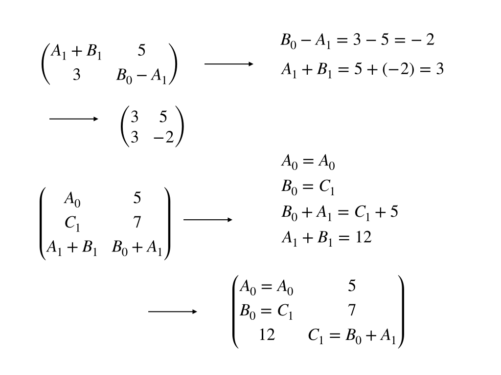
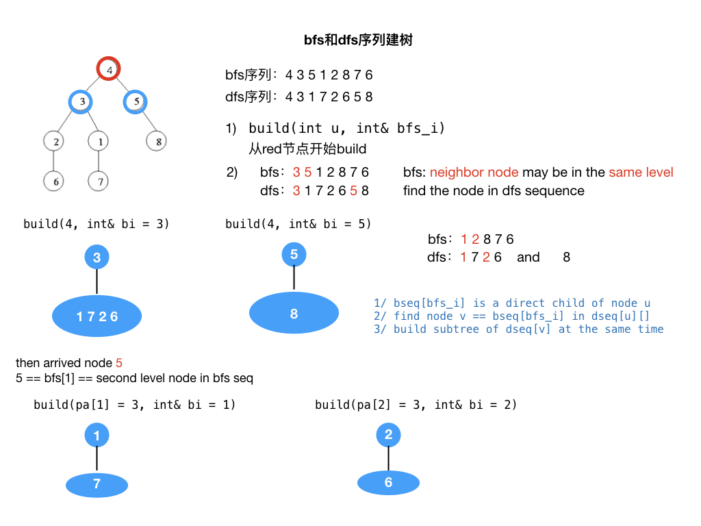
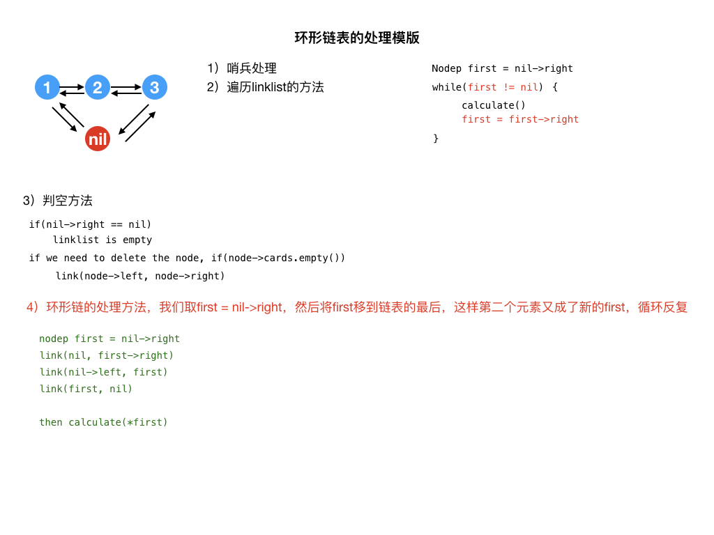
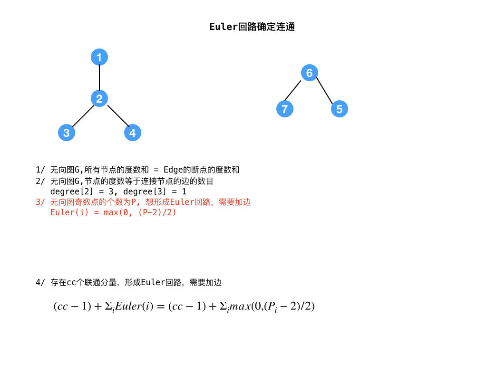

<!DOCTYPE html><html lang="zh-CN" data-theme="light"><head><meta charset="UTF-8"><meta http-equiv="X-UA-Compatible" content="IE=edge"><meta name="viewport" content="width=device-width,initial-scale=1"><title>数据结构优化（二） | 算法小站</title><meta name="keywords" content="tree"><meta name="author" content="fogsail,fogsail_chen@163.com"><meta name="copyright" content="fogsail"><meta name="format-detection" content="telephone=no"><meta name="theme-color" content="#ffffff"><meta http-equiv="Cache-Control" content="no-transform"><meta http-equiv="Cache-Control" content="no-siteapp"><meta name="description" content="这部分内容还是基础数据结构模版，以及一些综合应用"><meta property="og:type" content="article"><meta property="og:title" content="数据结构优化（二）"><meta property="og:url" content="https://www.fogsail.net/2019/05/24/20190524/index.html"><meta property="og:site_name" content="算法小站"><meta property="og:description" content="这部分内容还是基础数据结构模版，以及一些综合应用"><meta property="og:locale" content="zh_CN"><meta property="og:image" content="https://www.fogsail.net/img/algo-02.png"><meta property="article:published_time" content="2019-05-24T08:24:51.000Z"><meta property="article:modified_time" content="2021-01-28T04:12:42.416Z"><meta property="article:author" content="fogsail"><meta property="article:tag" content="tree"><meta name="twitter:card" content="summary"><meta name="twitter:image" content="https://www.fogsail.net/img/algo-02.png"><link rel="shortcut icon" href="/img/favicon.png"><link rel="canonical" href="https://www.fogsail.net/2019/05/24/20190524/"><link rel="preconnect" href="//cdn.jsdelivr.net"><link rel="preconnect" href="//www.google-analytics.com" crossorigin=""><link rel="preconnect" href="//hm.baidu.com"><link rel="preconnect" href="//s4.cnzz.com"><link rel="preconnect" href="//zz.bdstatic.com"><meta name="google-site-verification" content="EMoSEE-nLoAdIHWBDmdYpa0t4XBCF8aLYOM3ayoI0pI"><meta name="msvalidate.01" content="A5D49B867EF1BB3C062DA0149A0A2E1E"><meta name="baidu-site-verification" content="code-CXWS4dziOB"><meta name="360-site-verification" content="445d65d249d766c9b185e94639306645"><link rel="manifest" href="/img/pwa/manifest.json"><meta name="msapplication-TileColor" content="#fff"><link rel="apple-touch-icon" sizes="180x180" href="/img/pwa/apple-touch-icon.png"><link rel="icon" type="image/png" sizes="32x32" href="/img/pwa/32.png"><link rel="icon" type="image/png" sizes="16x16" href="/img/pwa/16.png"><link rel="mask-icon" href="/img/pwa/safari-pinned-tab.svg" color="#5bbad5"><link rel="stylesheet" href="/css/index.css"><link rel="stylesheet" href="https://cdn.jsdelivr.net/npm/@fortawesome/fontawesome-free/css/all.min.css" media="print" onload='this.media="all"'><link rel="stylesheet" href="https://cdn.jsdelivr.net/npm/node-snackbar/dist/snackbar.min.css" media="print" onload='this.media="all"'><link rel="stylesheet" href="https://cdn.jsdelivr.net/npm/instantsearch.js@2.10.5/dist/instantsearch.min.css" media="print" onload='this.media="all"'><script src="https://cdn.jsdelivr.net/npm/instantsearch.js@2.10.5/dist/instantsearch.min.js" defer></script><script>var _hmt=_hmt||[];!function(){var e=document.createElement("script");e.src="https://hm.baidu.com/hm.js?eefa70020af0829b6b4b9a6151d8a943";var t=document.getElementsByTagName("script")[0];t.parentNode.insertBefore(e,t)}()</script><script async src="https://www.googletagmanager.com/gtag/js?id=UA-114571328-1"></script><script>function gtag(){dataLayer.push(arguments)}window.dataLayer=window.dataLayer||[],gtag("js",new Date),gtag("config","UA-114571328-1")</script><script async data-pjax="data-pjax" src="https://s4.cnzz.com/z_stat.php?id=1279649349&amp;web_id=1279649349"></script><script>var GLOBAL_CONFIG={root:"/",algolia:{appId:"8QVTR8UQ0E",apiKey:"88abbbe5c86d52be951acbbc689ab2ab",indexName:"fogsail-blog",hits:{per_page:6},languages:{input_placeholder:"搜索文章",hits_empty:"找不到您查询的内容：${query}",hits_stats:"找到 ${hits} 条结果，用时 ${time} 毫秒"}},localSearch:void 0,translate:void 0,noticeOutdate:void 0,highlight:{plugin:"highlighjs",highlightCopy:!0,highlightLang:!0},copy:{success:"复制成功",error:"复制错误",noSupport:"浏览器不支持"},relativeDate:{homepage:!1,post:!1},runtime:"",date_suffix:{just:"刚刚",min:"分钟前",hour:"小时前",day:"天前",month:"个月前"},copyright:{limitCount:100,languages:{author:"作者: fogsail",link:"链接: ",source:"来源: 算法小站",info:"著作权归作者所有。商业转载请联系作者获得授权，非商业转载请注明出处。"}},lightbox:"fancybox",Snackbar:{chs_to_cht:"你已切换为繁体",cht_to_chs:"你已切换为简体",day_to_night:"你已切换为深色模式",night_to_day:"你已切换为浅色模式",bgLight:"#49b1f5",bgDark:"#121212",position:"bottom-left"},source:{jQuery:"https://cdn.jsdelivr.net/npm/jquery@latest/dist/jquery.min.js",justifiedGallery:{js:"https://cdn.jsdelivr.net/npm/justifiedGallery/dist/js/jquery.justifiedGallery.min.js",css:"https://cdn.jsdelivr.net/npm/justifiedGallery/dist/css/justifiedGallery.min.css"},fancybox:{js:"https://cdn.jsdelivr.net/npm/@fancyapps/fancybox@latest/dist/jquery.fancybox.min.js",css:"https://cdn.jsdelivr.net/npm/@fancyapps/fancybox@latest/dist/jquery.fancybox.min.css"}},isPhotoFigcaption:!1,islazyload:!1,isanchor:!1},saveToLocal={set:function(t,e,a){const i=864e5*a,s={value:e,expiry:(new Date).getTime()+i};localStorage.setItem(t,JSON.stringify(s))},get:function(t){const e=localStorage.getItem(t);if(!e)return;const a=JSON.parse(e);if(!((new Date).getTime()>a.expiry))return a.value;localStorage.removeItem(t)}};const getScript=t=>new Promise((e,a)=>{const i=document.createElement("script");i.src=t,i.async=!0,i.onerror=a,i.onload=i.onreadystatechange=function(){const t=this.readyState;t&&"loaded"!==t&&"complete"!==t||(i.onload=i.onreadystatechange=null,e())},document.head.appendChild(i)})</script><script id="config_change">var GLOBAL_CONFIG_SITE={isPost:!0,isHome:!1,isHighlightShrink:!1,isToc:!0,postUpdate:"2021-01-28 12:12:42"}</script><noscript><style>#nav{opacity:1}.justified-gallery img{opacity:1}#post-meta time,#recent-posts time{display:inline!important}</style></noscript><script>!function(){window.activateDarkMode=function(){document.documentElement.setAttribute("data-theme","dark"),null!==document.querySelector('meta[name="theme-color"]')&&document.querySelector('meta[name="theme-color"]').setAttribute("content","#0d0d0d")},window.activateLightMode=function(){document.documentElement.setAttribute("data-theme","light"),null!==document.querySelector('meta[name="theme-color"]')&&document.querySelector('meta[name="theme-color"]').setAttribute("content","#ffffff")};const e=saveToLocal.get("theme");"dark"===e?activateDarkMode():"light"===e&&activateLightMode();const t=saveToLocal.get("aside-status");void 0!==t&&("hide"===t?document.documentElement.classList.add("hide-aside"):document.documentElement.classList.remove("hide-aside"))}()</script><style>.app-refresh{position:fixed;top:-2.2rem;left:0;right:0;z-index:99999;padding:0 1rem;font-size:15px;height:2.2rem;transition:all .3s ease}.app-refresh-wrap{display:flex;color:#fff;height:100%;align-items:center;justify-content:center}.app-refresh-wrap a{color:#fff;text-decoration:underline;cursor:pointer}</style><meta name="generator" content="Hexo 5.3.0"></head><body><div id="sidebar"><div id="menu-mask"></div><div id="sidebar-menus"><div class="author-avatar"></div><div class="site-data"><div class="data-item is-center"><div class="data-item-link"><a href="/archives/"><div class="headline">文章</div><div class="length-num">113</div></a></div></div><div class="data-item is-center"><div class="data-item-link"><a href="/tags/"><div class="headline">标签</div><div class="length-num">65</div></a></div></div><div class="data-item is-center"><div class="data-item-link"><a href="/categories/"><div class="headline">分类</div><div class="length-num">25</div></a></div></div></div><hr><div class="menus_items"><div class="menus_item"><a class="site-page" href="/"><i class="fa-fw fas fa-home"></i> <span>首页</span></a></div><div class="menus_item"><a class="site-page" href="/archives/"><i class="fa-fw fas fa-archive"></i> <span>所有文章</span></a></div><div class="menus_item"><a class="site-page" href="/tags/"><i class="fa-fw fas fa-tags"></i> <span>标签</span></a></div><div class="menus_item"><a class="site-page" href="/categories/"><i class="fa-fw fas fa-folder-open"></i> <span>分类</span></a></div><div class="menus_item"><a class="site-page" href="javascript:void(0);" rel="external nofollow noreferrer"><i class="fa-fw fas fa-list"></i> <span>娱乐</span><i class="fas fa-chevron-down expand"></i></a><ul class="menus_item_child"><li><a class="site-page" href="/games/"><i class="fa-fw fas fa-gamepad"></i> <span>游戏</span></a></li><li><a class="site-page" href="/movies/"><i class="fa-fw fas fa-video"></i> <span>电影</span></a></li><li><a class="site-page" href="/books/"><i class="fa-fw fas fa-book"></i> <span>读书</span></a></li></ul></div><div class="menus_item"><a class="site-page" href="/link/"><i class="fa-fw fas fa-link"></i> <span>友链</span></a></div></div></div></div><div class="post" id="body-wrap"><header class="post-bg" id="page-header" style="background-image:url(/img/algo-02.png)"><nav id="nav"><span id="blog_name"><a id="site-name" href="/">算法小站</a></span><div id="menus"><div id="search-button"><a class="site-page social-icon search"><i class="fas fa-search fa-fw"></i> <span>搜索</span></a></div><div class="menus_items"><div class="menus_item"><a class="site-page" href="/"><i class="fa-fw fas fa-home"></i> <span>首页</span></a></div><div class="menus_item"><a class="site-page" href="/archives/"><i class="fa-fw fas fa-archive"></i> <span>所有文章</span></a></div><div class="menus_item"><a class="site-page" href="/tags/"><i class="fa-fw fas fa-tags"></i> <span>标签</span></a></div><div class="menus_item"><a class="site-page" href="/categories/"><i class="fa-fw fas fa-folder-open"></i> <span>分类</span></a></div><div class="menus_item"><a class="site-page" href="javascript:void(0);" rel="external nofollow noreferrer"><i class="fa-fw fas fa-list"></i> <span>娱乐</span><i class="fas fa-chevron-down expand"></i></a><ul class="menus_item_child"><li><a class="site-page" href="/games/"><i class="fa-fw fas fa-gamepad"></i> <span>游戏</span></a></li><li><a class="site-page" href="/movies/"><i class="fa-fw fas fa-video"></i> <span>电影</span></a></li><li><a class="site-page" href="/books/"><i class="fa-fw fas fa-book"></i> <span>读书</span></a></li></ul></div><div class="menus_item"><a class="site-page" href="/link/"><i class="fa-fw fas fa-link"></i> <span>友链</span></a></div></div><div id="toggle-menu"><a class="site-page"><i class="fas fa-bars fa-fw"></i></a></div></div></nav><div id="post-info"><h1 class="post-title">数据结构优化（二）</h1><div id="post-meta"><div class="meta-firstline"><span class="post-meta-date"><i class="fa-fw post-meta-icon far fa-calendar-alt"></i><span class="post-meta-label">发表于</span><time datetime="2019-05-24T08:24:51.000Z" title="undefined 2019-05-24 16:24:51">2019-05-24</time></span><span class="post-meta-categories"><span class="post-meta-separator">|</span><i class="fas fa-inbox fa-fw post-meta-icon"></i><a class="post-meta-categories" href="/categories/tree/">tree</a></span></div><div class="meta-secondline"></div></div></div></header><main class="layout" id="content-inner"><div id="post"><article class="post-content" id="article-container"><p>主要写一些数据结构模版<br>以及综合应用</p><h2 id="拓扑排序：有向环解决二阶矩阵">拓扑排序：有向环解决二阶矩阵</h2><a id="more"></a><p>矩阵问题，求方程式是否有解<br><strong>本质是用拓扑排序判断有向环，解决循环引用的问题</strong></p><p><strong><a target="_blank" rel="noopener external nofollow noreferrer" href="https://cn.vjudge.net/problem/UVALive-5154">LA5154</a></strong></p><p>题目分析：<br></p><p><strong>1/ 表达式的表示</strong></p><figure class="highlight bash"><table><tr><td class="gutter"><pre><span class="line">1</span><br><span class="line">2</span><br></pre></td><td class="code"><pre><span class="line">const int maxl = 128;</span><br><span class="line">char exp[maxr][maxc][maxl];</span><br></pre></td></tr></table></figure><p><strong>2/ 读取表达式中的一串数字</strong></p><figure class="highlight bash"><table><tr><td class="gutter"><pre><span class="line">1</span><br><span class="line">2</span><br><span class="line">3</span><br><span class="line">4</span><br><span class="line">5</span><br><span class="line">6</span><br><span class="line">7</span><br><span class="line">8</span><br><span class="line">9</span><br><span class="line">10</span><br><span class="line">11</span><br><span class="line">12</span><br><span class="line">13</span><br></pre></td><td class="code"><pre><span class="line">int <span class="built_in">read</span>(const char* str, int&amp; len) &#123;</span><br><span class="line">    len = 0;</span><br><span class="line">    // len 初始化为多少，具体问题具体分析</span><br><span class="line">    int ans = 0, base = 1;</span><br><span class="line">    <span class="keyword">while</span>(str[len] &amp;&amp; isdigit(str[len])) &#123;</span><br><span class="line">        ans *= base;</span><br><span class="line">        ans += str[len] - <span class="string">&#x27;0&#x27;</span>;</span><br><span class="line">        base *= 10;</span><br><span class="line"></span><br><span class="line">        len++;</span><br><span class="line">    &#125;</span><br><span class="line">    <span class="built_in">return</span> ans;</span><br><span class="line">&#125;</span><br></pre></td></tr></table></figure><p><strong>3/ 二维拓扑排序程序结构</strong></p><figure class="highlight bash"><table><tr><td class="gutter"><pre><span class="line">1</span><br><span class="line">2</span><br><span class="line">3</span><br><span class="line">4</span><br><span class="line">5</span><br><span class="line">6</span><br><span class="line">7</span><br><span class="line">8</span><br><span class="line">9</span><br><span class="line">10</span><br><span class="line">11</span><br><span class="line">12</span><br><span class="line">13</span><br><span class="line">14</span><br><span class="line">15</span><br><span class="line">16</span><br><span class="line">17</span><br><span class="line">18</span><br><span class="line">19</span><br><span class="line">20</span><br><span class="line">21</span><br><span class="line">22</span><br><span class="line">23</span><br><span class="line">24</span><br><span class="line">25</span><br><span class="line">26</span><br><span class="line">27</span><br><span class="line">28</span><br><span class="line">29</span><br><span class="line">30</span><br><span class="line">31</span><br><span class="line">32</span><br><span class="line">33</span><br></pre></td><td class="code"><pre><span class="line">int vis[maxr][maxc];</span><br><span class="line">Set(vis, 0);</span><br><span class="line"></span><br><span class="line">bool candfs(int r, int c) &#123;</span><br><span class="line">    int&amp; ok = vis[r][c];</span><br><span class="line">    <span class="keyword">if</span>(ok == -1) <span class="built_in">return</span> <span class="literal">false</span>;</span><br><span class="line">    <span class="keyword">else</span> <span class="keyword">if</span>(ok == 1) <span class="built_in">return</span> <span class="literal">true</span>;</span><br><span class="line"></span><br><span class="line">    ok = -1;</span><br><span class="line"></span><br><span class="line">    /*</span><br><span class="line"></span><br><span class="line">    read_from_exp(exp_);</span><br><span class="line">    <span class="keyword">if</span>(!candfs(nr, nc)) <span class="built_in">return</span> <span class="literal">false</span>;</span><br><span class="line"></span><br><span class="line">    */</span><br><span class="line"></span><br><span class="line">    ok = 1;</span><br><span class="line">    <span class="built_in">return</span> <span class="literal">true</span>;</span><br><span class="line">&#125; </span><br><span class="line"></span><br><span class="line">void <span class="function"><span class="title">dfs</span></span>() &#123;</span><br><span class="line">    bool cycle = <span class="literal">false</span>;</span><br><span class="line">    _for(i, 0, R) _for(j, 0, c) &#123;</span><br><span class="line">        bool ok = candfs(i, j);</span><br><span class="line"></span><br><span class="line">        <span class="keyword">if</span>(!ok) &#123;</span><br><span class="line">            cycle = <span class="literal">true</span>;</span><br><span class="line">            print_ans();</span><br><span class="line">        &#125;</span><br><span class="line">    &#125;</span><br><span class="line">    <span class="keyword">if</span>(cycle) <span class="built_in">return</span>;</span><br><span class="line">&#125;</span><br></pre></td></tr></table></figure><p><strong>4/ 表达式求解：读取表达式的值</strong><br><strong>A7898787这样，从A+1开始，往后读取连续的值7898787</strong></p><figure class="highlight bash"><table><tr><td class="gutter"><pre><span class="line">1</span><br><span class="line">2</span><br><span class="line">3</span><br><span class="line">4</span><br><span class="line">5</span><br><span class="line">6</span><br><span class="line">7</span><br><span class="line">8</span><br><span class="line">9</span><br><span class="line">10</span><br><span class="line">11</span><br><span class="line">12</span><br><span class="line">13</span><br><span class="line">14</span><br><span class="line">15</span><br><span class="line">16</span><br><span class="line">17</span><br><span class="line">18</span><br><span class="line">19</span><br><span class="line">20</span><br><span class="line">21</span><br><span class="line">22</span><br><span class="line">23</span><br><span class="line">24</span><br><span class="line">25</span><br><span class="line">26</span><br><span class="line">27</span><br><span class="line">28</span><br><span class="line">29</span><br><span class="line">30</span><br><span class="line">31</span><br><span class="line">32</span><br><span class="line">33</span><br><span class="line">34</span><br><span class="line">35</span><br><span class="line">36</span><br><span class="line">37</span><br></pre></td><td class="code"><pre><span class="line">bool candfs(int r, int c) &#123;</span><br><span class="line">    int&amp; val = value[r][c];</span><br><span class="line">    val = 0;</span><br><span class="line"></span><br><span class="line">    int&amp; ok = vis[r][c];</span><br><span class="line">    ....</span><br><span class="line">    ....</span><br><span class="line">    // 代码同上</span><br><span class="line"></span><br><span class="line">    // read_from_exp(exp_):</span><br><span class="line"></span><br><span class="line">    const char* exp_ = exp[r][c];</span><br><span class="line">    int sign = 1;</span><br><span class="line">    _for(i, 0, strlen(exp_)) &#123;</span><br><span class="line">        <span class="keyword">if</span>(exp_[i] == <span class="string">&#x27;-&#x27;</span>) sign = -1;</span><br><span class="line">        <span class="keyword">else</span> <span class="keyword">if</span>(exp_[i] == <span class="string">&#x27;+&#x27;</span>) sign = 1;</span><br><span class="line">        <span class="keyword">else</span> <span class="keyword">if</span>(isdigit(exp_[i])) &#123;</span><br><span class="line">            int elen, res;</span><br><span class="line">            res = <span class="built_in">read</span>(exp_+i, elen);</span><br><span class="line"></span><br><span class="line">            val += res * sign;</span><br><span class="line">            sign = 1;</span><br><span class="line">            i += elen - 1;</span><br><span class="line">        &#125;</span><br><span class="line">        <span class="keyword">else</span> <span class="keyword">if</span>(isupper(exp_[i])) &#123;</span><br><span class="line">            int elen;</span><br><span class="line">            int row = exp_[i] - <span class="string">&#x27;A&#x27;</span>;</span><br><span class="line">            int col = <span class="built_in">read</span>(exp_+i+1, elen);</span><br><span class="line"></span><br><span class="line">            <span class="keyword">if</span>(!candfs(row, col)) <span class="built_in">return</span> <span class="literal">false</span>;</span><br><span class="line"></span><br><span class="line">            val += sign * value[row][col];</span><br><span class="line">            sign = 1;</span><br><span class="line">            i += elen + 1 - 1;</span><br><span class="line">        &#125;</span><br><span class="line">    &#125;</span><br><span class="line">&#125;</span><br></pre></td></tr></table></figure><h3 id="代码实现">代码实现</h3><figure class="highlight bash"><table><tr><td class="gutter"><pre><span class="line">1</span><br><span class="line">2</span><br><span class="line">3</span><br><span class="line">4</span><br><span class="line">5</span><br><span class="line">6</span><br><span class="line">7</span><br><span class="line">8</span><br><span class="line">9</span><br><span class="line">10</span><br><span class="line">11</span><br><span class="line">12</span><br><span class="line">13</span><br><span class="line">14</span><br><span class="line">15</span><br><span class="line">16</span><br><span class="line">17</span><br><span class="line">18</span><br><span class="line">19</span><br><span class="line">20</span><br><span class="line">21</span><br><span class="line">22</span><br><span class="line">23</span><br><span class="line">24</span><br><span class="line">25</span><br><span class="line">26</span><br><span class="line">27</span><br><span class="line">28</span><br><span class="line">29</span><br><span class="line">30</span><br><span class="line">31</span><br><span class="line">32</span><br><span class="line">33</span><br><span class="line">34</span><br><span class="line">35</span><br><span class="line">36</span><br><span class="line">37</span><br><span class="line">38</span><br><span class="line">39</span><br><span class="line">40</span><br><span class="line">41</span><br><span class="line">42</span><br><span class="line">43</span><br><span class="line">44</span><br><span class="line">45</span><br><span class="line">46</span><br><span class="line">47</span><br><span class="line">48</span><br><span class="line">49</span><br><span class="line">50</span><br><span class="line">51</span><br><span class="line">52</span><br><span class="line">53</span><br><span class="line">54</span><br><span class="line">55</span><br><span class="line">56</span><br><span class="line">57</span><br><span class="line">58</span><br><span class="line">59</span><br><span class="line">60</span><br><span class="line">61</span><br><span class="line">62</span><br><span class="line">63</span><br><span class="line">64</span><br><span class="line">65</span><br><span class="line">66</span><br><span class="line">67</span><br><span class="line">68</span><br><span class="line">69</span><br><span class="line">70</span><br><span class="line">71</span><br><span class="line">72</span><br><span class="line">73</span><br><span class="line">74</span><br><span class="line">75</span><br><span class="line">76</span><br><span class="line">77</span><br><span class="line">78</span><br><span class="line">79</span><br><span class="line">80</span><br><span class="line">81</span><br><span class="line">82</span><br><span class="line">83</span><br><span class="line">84</span><br><span class="line">85</span><br><span class="line">86</span><br><span class="line">87</span><br><span class="line">88</span><br><span class="line">89</span><br><span class="line">90</span><br><span class="line">91</span><br><span class="line">92</span><br><span class="line">93</span><br><span class="line">94</span><br><span class="line">95</span><br><span class="line">96</span><br><span class="line">97</span><br><span class="line">98</span><br><span class="line">99</span><br><span class="line">100</span><br><span class="line">101</span><br><span class="line">102</span><br><span class="line">103</span><br><span class="line">104</span><br><span class="line">105</span><br><span class="line">106</span><br><span class="line">107</span><br><span class="line">108</span><br><span class="line">109</span><br><span class="line">110</span><br><span class="line">111</span><br><span class="line">112</span><br><span class="line">113</span><br><span class="line">114</span><br><span class="line">115</span><br><span class="line">116</span><br><span class="line">117</span><br><span class="line">118</span><br><span class="line">119</span><br><span class="line">120</span><br><span class="line">121</span><br><span class="line">122</span><br><span class="line">123</span><br><span class="line">124</span><br><span class="line">125</span><br><span class="line">126</span><br><span class="line">127</span><br><span class="line">128</span><br><span class="line">129</span><br><span class="line">130</span><br><span class="line">131</span><br><span class="line">132</span><br><span class="line">133</span><br><span class="line">134</span><br><span class="line">135</span><br><span class="line">136</span><br><span class="line">137</span><br><span class="line">138</span><br><span class="line">139</span><br><span class="line">140</span><br><span class="line">141</span><br><span class="line">142</span><br><span class="line">143</span><br><span class="line">144</span><br><span class="line">145</span><br><span class="line">146</span><br><span class="line">147</span><br></pre></td><td class="code"><pre><span class="line">//</span><br><span class="line">//  main.cpp</span><br><span class="line">//  LA5154</span><br><span class="line">//</span><br><span class="line">//  Created by zhangmin chen on 2019/4/18.</span><br><span class="line">//  Copyright © 2019 zhangmin chen. All rights reserved.</span><br><span class="line">//</span><br><span class="line"></span><br><span class="line"><span class="comment">#include &lt;iostream&gt;</span></span><br><span class="line"><span class="comment">#include &lt;cstdio&gt;</span></span><br><span class="line"><span class="comment">#include &lt;cstring&gt;</span></span><br><span class="line"><span class="comment">#include &lt;cstdlib&gt;</span></span><br><span class="line"><span class="comment">#include &lt;algorithm&gt;</span></span><br><span class="line"><span class="comment">#include &lt;queue&gt;</span></span><br><span class="line"><span class="comment">#include &lt;vector&gt;</span></span><br><span class="line"><span class="comment">#include &lt;stack&gt;</span></span><br><span class="line"><span class="comment">#include &lt;map&gt;</span></span><br><span class="line"><span class="comment">#include &lt;set&gt;</span></span><br><span class="line"></span><br><span class="line">using namespace std;</span><br><span class="line">typedef long long llong;</span><br><span class="line"></span><br><span class="line"><span class="comment">#define Cpy(a, b) memcpy(a, b, sizeof(a))</span></span><br><span class="line"><span class="comment">#define Set(a, v) memset(a, v, sizeof(a))</span></span><br><span class="line"><span class="comment">#define debug(x) cout &lt;&lt; #x &lt;&lt; &quot;: &quot; &lt;&lt; x &lt;&lt; endl</span></span><br><span class="line"><span class="comment">#define _rep(i, l, r) for(int i = (l); i &lt;= (r); i++)</span></span><br><span class="line"><span class="comment">#define _for(i, l, r) for(int i = (l); i &lt; (r); i++)</span></span><br><span class="line"><span class="comment">#define debug_(ch, i) printf(#ch&quot;[%d]: %d\n&quot;, i, ch[i])</span></span><br><span class="line"><span class="comment">#define debug_m(mp, p) printf(#mp&quot;[%d]: %d\n&quot;, p-&gt;first, p-&gt;second)</span></span><br><span class="line"></span><br><span class="line">const int maxr = 20 + 5;</span><br><span class="line">const int maxc = 10 + 5;</span><br><span class="line"></span><br><span class="line">int R, C;</span><br><span class="line">int vis[maxr][maxc], value[maxr][maxc];</span><br><span class="line">char exp[maxr][maxc][128];</span><br><span class="line"></span><br><span class="line">int <span class="built_in">read</span>(const char* str, int&amp; len) &#123;</span><br><span class="line">    //</span><br><span class="line">    len = 0;</span><br><span class="line">    int ans = 0, base = 1;</span><br><span class="line">    <span class="keyword">while</span>(str[len] &amp;&amp; isdigit(str[len])) &#123;</span><br><span class="line">        //</span><br><span class="line">        ans *= base;</span><br><span class="line">        ans += str[len] - <span class="string">&#x27;0&#x27;</span>;</span><br><span class="line">        base *= 10;</span><br><span class="line">        </span><br><span class="line">        len++;</span><br><span class="line">    &#125;</span><br><span class="line">    <span class="built_in">return</span> ans;</span><br><span class="line">&#125;</span><br><span class="line"></span><br><span class="line">int canDfs(int r, int c) &#123;</span><br><span class="line">    // template of toposort()</span><br><span class="line">    </span><br><span class="line">    int&amp; ok = vis[r][c];</span><br><span class="line">    <span class="keyword">if</span>(ok == -1) <span class="built_in">return</span> <span class="literal">false</span>;</span><br><span class="line">    <span class="keyword">else</span> <span class="keyword">if</span>(ok == 1) <span class="built_in">return</span> <span class="literal">true</span>;</span><br><span class="line">    </span><br><span class="line">    ok = -1;</span><br><span class="line">    // visit signed</span><br><span class="line">    </span><br><span class="line">    </span><br><span class="line">    int&amp; val = value[r][c];</span><br><span class="line">    val = 0;</span><br><span class="line">    </span><br><span class="line">    const char* exp_ = exp[r][c];</span><br><span class="line">    int len = (int)strlen(exp_), sign = 1;</span><br><span class="line">    </span><br><span class="line">    <span class="keyword">for</span>(int i = 0; i &lt; len; i++) &#123;</span><br><span class="line">        <span class="keyword">if</span>(exp_[i] == <span class="string">&#x27;-&#x27;</span>) sign = -1;</span><br><span class="line">        <span class="keyword">else</span> <span class="keyword">if</span>(exp_[i] == <span class="string">&#x27;+&#x27;</span>) sign = 1;</span><br><span class="line">        <span class="keyword">else</span> <span class="keyword">if</span>(isdigit(exp_[i])) &#123;</span><br><span class="line">            // just digit, assign value</span><br><span class="line">            int elen;</span><br><span class="line">            int res = <span class="built_in">read</span>(exp_+i, elen);</span><br><span class="line">            </span><br><span class="line">            val += res * sign;</span><br><span class="line">            sign = 1;</span><br><span class="line">            i += elen - 1;</span><br><span class="line">            </span><br><span class="line">        &#125;</span><br><span class="line">        <span class="keyword">else</span> <span class="keyword">if</span>(isupper(exp_[i])) &#123;</span><br><span class="line">            // A1+B2.... judge topo cycle?</span><br><span class="line">            int elen;</span><br><span class="line">            int row = exp_[i] - <span class="string">&#x27;A&#x27;</span>;</span><br><span class="line">            int col = <span class="built_in">read</span>(exp_+i+1, elen);</span><br><span class="line">            </span><br><span class="line">            <span class="keyword">if</span>(!canDfs(row, col)) <span class="built_in">return</span> <span class="literal">false</span>;</span><br><span class="line">            </span><br><span class="line">            val += sign * value[row][col];</span><br><span class="line">            </span><br><span class="line">            sign = 1;</span><br><span class="line">            i += elen - 1 + 1;</span><br><span class="line">            // we add <span class="string">&#x27;A&#x27;</span>, <span class="string">&#x27;B&#x27;</span>, upper alpha</span><br><span class="line">        &#125;</span><br><span class="line">    &#125;</span><br><span class="line">    </span><br><span class="line">    // <span class="keyword">then</span> is the <span class="literal">true</span> situation</span><br><span class="line">    ok = 1;</span><br><span class="line">    <span class="built_in">return</span> <span class="literal">true</span>;</span><br><span class="line">&#125;</span><br><span class="line"></span><br><span class="line"></span><br><span class="line">void <span class="function"><span class="title">dfs</span></span>() &#123;</span><br><span class="line">    //</span><br><span class="line">    memset(vis, 0, sizeof(vis));</span><br><span class="line">    bool cycle = <span class="literal">false</span>;</span><br><span class="line">    </span><br><span class="line">    <span class="keyword">for</span>(int i = 0; i &lt; R; i++) <span class="keyword">for</span>(int j = 0; j &lt; C; j++) &#123;</span><br><span class="line">        bool ok = canDfs(i, j);</span><br><span class="line">        </span><br><span class="line">        <span class="keyword">if</span>(!ok) &#123;</span><br><span class="line">            cycle = <span class="literal">true</span>;</span><br><span class="line">            <span class="built_in">printf</span>(<span class="string">&quot;%c%d: %s\n&quot;</span>, <span class="string">&#x27;A&#x27;</span>+i, j, exp[i][j]);</span><br><span class="line">        &#125;</span><br><span class="line">    &#125;</span><br><span class="line">    </span><br><span class="line">    <span class="keyword">if</span>(cycle) <span class="built_in">return</span>;</span><br><span class="line">    </span><br><span class="line">    // <span class="keyword">then</span> we can explain the exp</span><br><span class="line">    <span class="built_in">printf</span>(<span class="string">&quot; &quot;</span>);</span><br><span class="line">    <span class="keyword">for</span>(int i = 0; i &lt; C; i++) <span class="built_in">printf</span>(<span class="string">&quot;%6d&quot;</span>, i);</span><br><span class="line">    cout &lt;&lt; <span class="string">endl;</span></span><br><span class="line"><span class="string">    </span></span><br><span class="line"><span class="string">    for(int i = 0; i &lt; R; i++) &#123;</span></span><br><span class="line"><span class="string">        printf(&quot;%c&quot;, i+&#x27;A&#x27;);</span></span><br><span class="line"><span class="string">        for(int j = 0; j &lt; C; j++)</span></span><br><span class="line"><span class="string">            printf(&quot;%6d&quot;, value[i][j]);</span></span><br><span class="line"><span class="string">        cout &lt;&lt; endl</span>;</span><br><span class="line">    &#125;</span><br><span class="line">&#125;</span><br><span class="line"></span><br><span class="line">int <span class="function"><span class="title">main</span></span>() &#123;</span><br><span class="line">    freopen(<span class="string">&quot;input.txt&quot;</span>, <span class="string">&quot;r&quot;</span>, stdin);</span><br><span class="line">    <span class="keyword">while</span>(<span class="literal">true</span>) &#123;</span><br><span class="line">        cin &gt;&gt; R &gt;&gt; C;</span><br><span class="line">        <span class="keyword">if</span>(R == 0 || C == 0) <span class="built_in">break</span>;</span><br><span class="line">        </span><br><span class="line">        <span class="keyword">for</span>(int i = 0; i &lt; R; i++) <span class="keyword">for</span>(int j = 0; j &lt; C; j++) scanf(<span class="string">&quot;%s&quot;</span>, exp[i][j]);</span><br><span class="line">        </span><br><span class="line">        // <span class="keyword">then</span> we run solve()</span><br><span class="line">        dfs();</span><br><span class="line">        cout &lt;&lt; <span class="string">endl;</span></span><br><span class="line"><span class="string">    &#125;</span></span><br><span class="line"><span class="string">&#125;</span></span><br><span class="line"><span class="string"></span></span><br></pre></td></tr></table></figure><h2 id="状态建图：内存池方法">状态建图：内存池方法</h2><p><strong>以骰子为例，程序结构如下：</strong></p><p><strong><a target="_blank" rel="noopener external nofollow noreferrer" href="https://cn.vjudge.net/problem/UVALive-5210">LA5210</a></strong></p><p><strong>1/ bfs：根据状态建图，类的属性以及成员函数分析如下</strong><br><strong>因为要输出路径，所以需要保存prev信息</strong><br><strong>骰子走在棋盘上，需要棋盘信息，和骰子的posture</strong></p><p><strong>hash由棋盘位置+骰子posture共同决定</strong><br><strong>hash值是用来判断这个状态是否vis过</strong></p><p><strong>bfs中， queue&lt; Statp &gt; que， 存储状态指针， 更方便判断是否存在最短路径</strong><br><strong>set&lt; Statp &gt; vis, 用vis.count(nxt)， 判断下一步是否走过了？</strong></p><figure class="highlight bash"><table><tr><td class="gutter"><pre><span class="line">1</span><br><span class="line">2</span><br><span class="line">3</span><br><span class="line">4</span><br><span class="line">5</span><br><span class="line">6</span><br><span class="line">7</span><br><span class="line">8</span><br><span class="line">9</span><br><span class="line">10</span><br><span class="line">11</span><br><span class="line">12</span><br><span class="line">13</span><br><span class="line">14</span><br><span class="line">15</span><br><span class="line">16</span><br><span class="line">17</span><br><span class="line">18</span><br><span class="line">19</span><br><span class="line">20</span><br><span class="line">21</span><br><span class="line">22</span><br><span class="line">23</span><br><span class="line">24</span><br><span class="line">25</span><br><span class="line">26</span><br><span class="line">27</span><br><span class="line">28</span><br></pre></td><td class="code"><pre><span class="line">class Stat &#123;</span><br><span class="line">public:</span><br><span class="line">    int r, c;</span><br><span class="line">    // nr = r + dir[i], nc = c + dir[i]</span><br><span class="line">    // 棋盘信息</span><br><span class="line"></span><br><span class="line">    int face, back, top, bottom, left, right;</span><br><span class="line">    // 骰子自己的posture信息</span><br><span class="line"></span><br><span class="line">    Stat* prev;</span><br><span class="line"></span><br><span class="line">    void Stat(int r_, int c_) : r(r_), c(c_) &#123;&#125;</span><br><span class="line">    // 棋盘位置初始化</span><br><span class="line"></span><br><span class="line">    void init(int top, int face) &#123;</span><br><span class="line">        this-&gt;top = top;</span><br><span class="line">        this-&gt;face = face;</span><br><span class="line">        // </span><br><span class="line">    &#125;</span><br><span class="line">    // 骰子posture初始化</span><br><span class="line"></span><br><span class="line">    int <span class="built_in">hash</span>() const &#123;</span><br><span class="line">        <span class="built_in">return</span> 1000 * (r-1) + 100 * (c-1) + 10 * top + face;</span><br><span class="line">    &#125;</span><br><span class="line"></span><br><span class="line">    // 棋盘状态+骰子状态，确定状态<span class="built_in">hash</span></span><br><span class="line">    // 用于<span class="built_in">set</span>&lt;Statp, StatCmp&gt; vis, vis.count(nxt)判断下一步路径是否走过</span><br><span class="line">&#125;;</span><br></pre></td></tr></table></figure><p><strong>2/ bfs保存状态</strong><br><strong>线程池，内存池技术</strong><br><strong>保存指针，方便计算</strong></p><figure class="highlight bash"><table><tr><td class="gutter"><pre><span class="line">1</span><br><span class="line">2</span><br><span class="line">3</span><br><span class="line">4</span><br><span class="line">5</span><br><span class="line">6</span><br><span class="line">7</span><br><span class="line">8</span><br><span class="line">9</span><br><span class="line">10</span><br><span class="line">11</span><br><span class="line">12</span><br><span class="line">13</span><br><span class="line">14</span><br><span class="line">15</span><br><span class="line">16</span><br><span class="line">17</span><br><span class="line">18</span><br><span class="line">19</span><br><span class="line">20</span><br><span class="line">21</span><br><span class="line">22</span><br><span class="line">23</span><br><span class="line">24</span><br><span class="line">25</span><br><span class="line">26</span><br></pre></td><td class="code"><pre><span class="line">typedef Stat* Statp;</span><br><span class="line"></span><br><span class="line">class Mempool &#123;</span><br><span class="line">public:</span><br><span class="line">    vector&lt;Statp&gt; buf;</span><br><span class="line"></span><br><span class="line">    void <span class="function"><span class="title">create</span></span>() &#123;</span><br><span class="line">        buf.push_back(new Stat());</span><br><span class="line">        <span class="built_in">return</span> buf.back();</span><br><span class="line">    &#125;</span><br><span class="line"></span><br><span class="line">    void <span class="function"><span class="title">fresh</span></span>() &#123;</span><br><span class="line">        _for(i, 0, buf.size()) delete buf[i];</span><br><span class="line">        buf.clear();</span><br><span class="line">    &#125;</span><br><span class="line">&#125;;</span><br><span class="line"></span><br><span class="line">Mempool pools;</span><br><span class="line"></span><br><span class="line">class StatCmp &#123;</span><br><span class="line">public:</span><br><span class="line">    bool operator() (const Statp&amp; lhs, const Statp&amp; rhs) const &#123;</span><br><span class="line">        <span class="built_in">return</span> lhs-&gt;<span class="built_in">hash</span>() &lt; rhs-&gt;<span class="built_in">hash</span>();</span><br><span class="line">    &#125;    </span><br><span class="line">&#125;;</span><br><span class="line"></span><br></pre></td></tr></table></figure><p><strong>StatCmp用法：</strong><br><strong>状态 = 棋盘位置 + 骰子posture</strong><br><strong>是否访问过？我们用set &lt; Statp, StatCmp &gt; vis来存储</strong></p><p><strong>3/ bfs move信息，获取下一步的位置</strong></p><figure class="highlight bash"><table><tr><td class="gutter"><pre><span class="line">1</span><br><span class="line">2</span><br><span class="line">3</span><br><span class="line">4</span><br><span class="line">5</span><br><span class="line">6</span><br><span class="line">7</span><br><span class="line">8</span><br><span class="line">9</span><br><span class="line">10</span><br><span class="line">11</span><br><span class="line">12</span><br><span class="line">13</span><br><span class="line">14</span><br><span class="line">15</span><br><span class="line">16</span><br><span class="line">17</span><br><span class="line">18</span><br><span class="line">19</span><br><span class="line">20</span><br><span class="line">21</span><br><span class="line">22</span><br></pre></td><td class="code"><pre><span class="line">bool Stat::canMove(int dir) &#123;</span><br><span class="line">    int nr = r + dr[dir], nc = c + dc[dir];</span><br><span class="line">    <span class="keyword">if</span>(nr &gt; R || nr &lt; 1 || nc &gt; C || nc &lt; 1) <span class="built_in">return</span> <span class="literal">false</span>;</span><br><span class="line"></span><br><span class="line">    int mv = grid[nr][nc];</span><br><span class="line">    <span class="built_in">return</span> mv == right_pos;</span><br><span class="line">&#125;</span><br><span class="line"></span><br><span class="line">Statp Stat::move(int dir) &#123;</span><br><span class="line">    Statp nxt = pools.create();</span><br><span class="line"></span><br><span class="line">    // init在棋盘上的位置</span><br><span class="line">    int nr = r + dr[dir], nc = c + dc[dir];</span><br><span class="line">    nxt-&gt;prev = this;</span><br><span class="line">    nxt-&gt;r = nr; nxt-&gt;c = nc;</span><br><span class="line"></span><br><span class="line">    // 骰子自身posture需要init</span><br><span class="line">    <span class="keyword">if</span>(dir == UP) nxt-&gt;init(face, bottom);</span><br><span class="line">    // 模拟骰子翻滚的过程</span><br><span class="line"></span><br><span class="line">    <span class="built_in">return</span> nxt;</span><br><span class="line">&#125;</span><br></pre></td></tr></table></figure><p><strong>4/ bfs主过程</strong></p><figure class="highlight bash"><table><tr><td class="gutter"><pre><span class="line">1</span><br><span class="line">2</span><br><span class="line">3</span><br><span class="line">4</span><br><span class="line">5</span><br><span class="line">6</span><br><span class="line">7</span><br><span class="line">8</span><br><span class="line">9</span><br><span class="line">10</span><br><span class="line">11</span><br><span class="line">12</span><br><span class="line">13</span><br><span class="line">14</span><br><span class="line">15</span><br><span class="line">16</span><br><span class="line">17</span><br><span class="line">18</span><br><span class="line">19</span><br><span class="line">20</span><br><span class="line">21</span><br><span class="line">22</span><br><span class="line">23</span><br><span class="line">24</span><br></pre></td><td class="code"><pre><span class="line">Statp bfs(const Stat&amp; dest, Statp beg) &#123;</span><br><span class="line">    queue&lt;Statp&gt; que;</span><br><span class="line">    <span class="built_in">set</span>&lt;Statp, StatCmp&gt; vis;</span><br><span class="line"></span><br><span class="line">    que.push(beg);</span><br><span class="line">    vis.insert(beg);</span><br><span class="line"></span><br><span class="line">    <span class="keyword">while</span>(!que.empty()) &#123;</span><br><span class="line">        Statp cur = que.front(); que.pop();</span><br><span class="line">        <span class="keyword">if</span>(cur-&gt;r == dest.r &amp;&amp; cur-&gt;c == dest.c) <span class="built_in">return</span> cur;</span><br><span class="line"></span><br><span class="line">        _for(i, 0, 4) &#123;</span><br><span class="line">            <span class="keyword">if</span>(cur-&gt;canMove(i)) &#123;</span><br><span class="line">                Statp nxt = cur-&gt;move(i);</span><br><span class="line"></span><br><span class="line">                <span class="keyword">if</span>(vis.count(nxt)) <span class="built_in">continue</span>;</span><br><span class="line"></span><br><span class="line">                vis.insert(nxt);</span><br><span class="line">                que.push(nxt);</span><br><span class="line">            &#125;</span><br><span class="line">        &#125;</span><br><span class="line">    &#125;</span><br><span class="line">    <span class="built_in">return</span> null;</span><br><span class="line">&#125;</span><br></pre></td></tr></table></figure><p><strong>5/ 技巧：状态信息用Statp来表示</strong><br><strong>queue&lt; Statp &gt; que, set&lt; Statp, StatCmp&gt; vis</strong><br><strong>class Mempool { public: vector&lt; Statp &gt; buf; };</strong></p><p><strong>bfs无解的时候，可以很容易用if来判断</strong></p><h3 id="代码实现-2">代码实现</h3><figure class="highlight bash"><table><tr><td class="gutter"><pre><span class="line">1</span><br><span class="line">2</span><br><span class="line">3</span><br><span class="line">4</span><br><span class="line">5</span><br><span class="line">6</span><br><span class="line">7</span><br><span class="line">8</span><br><span class="line">9</span><br><span class="line">10</span><br><span class="line">11</span><br><span class="line">12</span><br><span class="line">13</span><br><span class="line">14</span><br><span class="line">15</span><br><span class="line">16</span><br><span class="line">17</span><br><span class="line">18</span><br><span class="line">19</span><br><span class="line">20</span><br><span class="line">21</span><br><span class="line">22</span><br><span class="line">23</span><br><span class="line">24</span><br><span class="line">25</span><br><span class="line">26</span><br><span class="line">27</span><br><span class="line">28</span><br><span class="line">29</span><br><span class="line">30</span><br><span class="line">31</span><br><span class="line">32</span><br><span class="line">33</span><br><span class="line">34</span><br><span class="line">35</span><br><span class="line">36</span><br><span class="line">37</span><br><span class="line">38</span><br><span class="line">39</span><br><span class="line">40</span><br><span class="line">41</span><br><span class="line">42</span><br><span class="line">43</span><br><span class="line">44</span><br><span class="line">45</span><br><span class="line">46</span><br><span class="line">47</span><br><span class="line">48</span><br><span class="line">49</span><br><span class="line">50</span><br><span class="line">51</span><br><span class="line">52</span><br><span class="line">53</span><br><span class="line">54</span><br><span class="line">55</span><br><span class="line">56</span><br><span class="line">57</span><br><span class="line">58</span><br><span class="line">59</span><br><span class="line">60</span><br><span class="line">61</span><br><span class="line">62</span><br><span class="line">63</span><br><span class="line">64</span><br><span class="line">65</span><br><span class="line">66</span><br><span class="line">67</span><br><span class="line">68</span><br><span class="line">69</span><br><span class="line">70</span><br><span class="line">71</span><br><span class="line">72</span><br><span class="line">73</span><br><span class="line">74</span><br><span class="line">75</span><br><span class="line">76</span><br><span class="line">77</span><br><span class="line">78</span><br><span class="line">79</span><br><span class="line">80</span><br><span class="line">81</span><br><span class="line">82</span><br><span class="line">83</span><br><span class="line">84</span><br><span class="line">85</span><br><span class="line">86</span><br><span class="line">87</span><br><span class="line">88</span><br><span class="line">89</span><br><span class="line">90</span><br><span class="line">91</span><br><span class="line">92</span><br><span class="line">93</span><br><span class="line">94</span><br><span class="line">95</span><br><span class="line">96</span><br><span class="line">97</span><br><span class="line">98</span><br><span class="line">99</span><br><span class="line">100</span><br><span class="line">101</span><br><span class="line">102</span><br><span class="line">103</span><br><span class="line">104</span><br><span class="line">105</span><br><span class="line">106</span><br><span class="line">107</span><br><span class="line">108</span><br><span class="line">109</span><br><span class="line">110</span><br><span class="line">111</span><br><span class="line">112</span><br><span class="line">113</span><br><span class="line">114</span><br><span class="line">115</span><br><span class="line">116</span><br><span class="line">117</span><br><span class="line">118</span><br><span class="line">119</span><br><span class="line">120</span><br><span class="line">121</span><br><span class="line">122</span><br><span class="line">123</span><br><span class="line">124</span><br><span class="line">125</span><br><span class="line">126</span><br><span class="line">127</span><br><span class="line">128</span><br><span class="line">129</span><br><span class="line">130</span><br><span class="line">131</span><br><span class="line">132</span><br><span class="line">133</span><br><span class="line">134</span><br><span class="line">135</span><br><span class="line">136</span><br><span class="line">137</span><br><span class="line">138</span><br><span class="line">139</span><br><span class="line">140</span><br><span class="line">141</span><br><span class="line">142</span><br><span class="line">143</span><br><span class="line">144</span><br><span class="line">145</span><br><span class="line">146</span><br><span class="line">147</span><br><span class="line">148</span><br><span class="line">149</span><br><span class="line">150</span><br><span class="line">151</span><br><span class="line">152</span><br><span class="line">153</span><br><span class="line">154</span><br><span class="line">155</span><br><span class="line">156</span><br><span class="line">157</span><br><span class="line">158</span><br><span class="line">159</span><br><span class="line">160</span><br><span class="line">161</span><br><span class="line">162</span><br><span class="line">163</span><br><span class="line">164</span><br><span class="line">165</span><br><span class="line">166</span><br><span class="line">167</span><br><span class="line">168</span><br><span class="line">169</span><br><span class="line">170</span><br><span class="line">171</span><br><span class="line">172</span><br><span class="line">173</span><br><span class="line">174</span><br><span class="line">175</span><br><span class="line">176</span><br><span class="line">177</span><br><span class="line">178</span><br><span class="line">179</span><br><span class="line">180</span><br><span class="line">181</span><br><span class="line">182</span><br><span class="line">183</span><br><span class="line">184</span><br><span class="line">185</span><br><span class="line">186</span><br><span class="line">187</span><br><span class="line">188</span><br><span class="line">189</span><br><span class="line">190</span><br><span class="line">191</span><br><span class="line">192</span><br><span class="line">193</span><br><span class="line">194</span><br><span class="line">195</span><br><span class="line">196</span><br><span class="line">197</span><br><span class="line">198</span><br><span class="line">199</span><br><span class="line">200</span><br><span class="line">201</span><br><span class="line">202</span><br><span class="line">203</span><br><span class="line">204</span><br><span class="line">205</span><br><span class="line">206</span><br><span class="line">207</span><br><span class="line">208</span><br><span class="line">209</span><br><span class="line">210</span><br><span class="line">211</span><br><span class="line">212</span><br><span class="line">213</span><br><span class="line">214</span><br><span class="line">215</span><br><span class="line">216</span><br><span class="line">217</span><br><span class="line">218</span><br><span class="line">219</span><br><span class="line">220</span><br><span class="line">221</span><br><span class="line">222</span><br><span class="line">223</span><br><span class="line">224</span><br><span class="line">225</span><br><span class="line">226</span><br><span class="line">227</span><br></pre></td><td class="code"><pre><span class="line">//</span><br><span class="line">//  main.cpp</span><br><span class="line">//  DiceyProblem</span><br><span class="line">//</span><br><span class="line">//  Created by zhangmin chen on 2019/4/17.</span><br><span class="line">//  Copyright © 2019 zhangmin chen. All rights reserved.</span><br><span class="line">//</span><br><span class="line"></span><br><span class="line"><span class="comment">#include &lt;iostream&gt;</span></span><br><span class="line"><span class="comment">#include &lt;cstdio&gt;</span></span><br><span class="line"><span class="comment">#include &lt;cstring&gt;</span></span><br><span class="line"><span class="comment">#include &lt;cstdlib&gt;</span></span><br><span class="line"><span class="comment">#include &lt;algorithm&gt;</span></span><br><span class="line"><span class="comment">#include &lt;queue&gt;</span></span><br><span class="line"><span class="comment">#include &lt;vector&gt;</span></span><br><span class="line"><span class="comment">#include &lt;stack&gt;</span></span><br><span class="line"><span class="comment">#include &lt;map&gt;</span></span><br><span class="line"><span class="comment">#include &lt;set&gt;</span></span><br><span class="line"></span><br><span class="line">using namespace std;</span><br><span class="line">typedef long long llong;</span><br><span class="line"></span><br><span class="line"><span class="comment">#define Cpy(a, b) memcpy(a, b, sizeof(a))</span></span><br><span class="line"><span class="comment">#define Set(a, v) memset(a, v, sizeof(a))</span></span><br><span class="line"><span class="comment">#define debug(x) cout &lt;&lt; #x &lt;&lt; &quot;: &quot; &lt;&lt; x &lt;&lt; endl</span></span><br><span class="line"><span class="comment">#define _rep(i, l, r) for(int i = (l); i &lt;= (r); i++)</span></span><br><span class="line"><span class="comment">#define _for(i, l, r) for(int i = (l); i &lt; (r); i++)</span></span><br><span class="line"><span class="comment">#define debug_(ch, i) printf(#ch&quot;[%d]: %d\n&quot;, i, ch[i])</span></span><br><span class="line"><span class="comment">#define debug_m(mp, p) printf(#mp&quot;[%d]: %d\n&quot;, p-&gt;first, p-&gt;second)</span></span><br><span class="line"></span><br><span class="line">// dice[face][top] = left</span><br><span class="line">// check:</span><br><span class="line">// (1, 1) = null, (1, 2) = 3, (1, 3) = 5, (1, 4) = 2, (1, 5) = 4, (1, 6) = null</span><br><span class="line">// (2, 1) = 4, (2, 2) = null, (2, 3) = 1, (2, 4) = 6, (2, 5) = null, (2, 6) = 3</span><br><span class="line">// (3, 1) = 2, (3, 2) = 6, (3, 3) = null, (3, 4) = null, (3, 5) = 1, (3, 6) = 5</span><br><span class="line">// (4, 1) = 5, (4, 2) = 1, (4, 3) = null, (4, 4) = null, (4, 5) = 6, (4, 6) = 2</span><br><span class="line">// (5, 1) = 3, (5, 2) = null, (5, 3) = 6, (5, 4) = 1, (5, 5) = null, (5, 6) = 4</span><br><span class="line">// (6, 1) = null, (6, 2) = 4, (6, 3) = 2, (6, 4) = 5, (6, 5) = 3, (6, 6) = null</span><br><span class="line"></span><br><span class="line">const int maxn = 15;</span><br><span class="line"></span><br><span class="line">const int dice[6][6] = &#123;</span><br><span class="line">    &#123;-1, 3, 5, 2, 4, -1&#125;,</span><br><span class="line">    &#123;4, -1, 1, 6, -1, 3&#125;,</span><br><span class="line">    &#123;2, 6, -1, -1, 1, 5&#125;,</span><br><span class="line">    &#123;5, 1, -1, -1, 6, 2&#125;,</span><br><span class="line">    &#123;3, -1, 6, 1, -1, 4&#125;,</span><br><span class="line">    &#123;-1, 4, 2, 5, 3, -1&#125;</span><br><span class="line">&#125;;</span><br><span class="line"></span><br><span class="line">const int dr[4] = &#123;-1, 0, 1, 0&#125;;</span><br><span class="line">const int dc[4] = &#123;0, -1, 0, 1&#125;;</span><br><span class="line">// &#123;up, left, down, right&#125;</span><br><span class="line"></span><br><span class="line">const int UP = 0, LEFT = 1, DOWN = 2, RIGHT = 3;</span><br><span class="line">int R, C;</span><br><span class="line">int grid[maxn][maxn];</span><br><span class="line"></span><br><span class="line">class Stat &#123;</span><br><span class="line">public:</span><br><span class="line">    int r, c;</span><br><span class="line">    int face, back, top, bottom, left, right;</span><br><span class="line">    Stat* prev;</span><br><span class="line">    // why prev? did we need nxt?</span><br><span class="line">    </span><br><span class="line">    <span class="function"><span class="title">Stat</span></span>() &#123;</span><br><span class="line">        prev = NULL;</span><br><span class="line">    &#125;</span><br><span class="line">    </span><br><span class="line">    Stat(int r, int c) : r(r), c(c) &#123;&#125;</span><br><span class="line">    </span><br><span class="line">    void init(int top, int face) &#123;</span><br><span class="line">        this-&gt;top = top;</span><br><span class="line">        this-&gt;face = face;</span><br><span class="line">        </span><br><span class="line">        back = 7 - face;</span><br><span class="line">        bottom = 7 - top;</span><br><span class="line">        </span><br><span class="line">        left = dice[face - 1][top - 1];</span><br><span class="line">        right = 7 - left;</span><br><span class="line">    &#125;</span><br><span class="line">    </span><br><span class="line">    bool canMove(int dir);</span><br><span class="line">    Stat* move(int dir);</span><br><span class="line">    </span><br><span class="line">    // usage: <span class="keyword">if</span>(canMove(i)) move(i)</span><br><span class="line">    </span><br><span class="line">    int <span class="built_in">hash</span>() const &#123;</span><br><span class="line">        <span class="built_in">return</span> 1000 * (r-1) + 100 * (c-1) + 10 * top + face;</span><br><span class="line">    &#125;</span><br><span class="line">&#125;;</span><br><span class="line"></span><br><span class="line"></span><br><span class="line">typedef Stat* Statp;</span><br><span class="line"></span><br><span class="line">class MemPool &#123;</span><br><span class="line">public:</span><br><span class="line">    vector&lt;Statp&gt; buf;</span><br><span class="line">    </span><br><span class="line">    Statp <span class="function"><span class="title">create</span></span>() &#123;</span><br><span class="line">        //</span><br><span class="line">        buf.push_back(new Stat());</span><br><span class="line">        <span class="built_in">return</span> buf.back();</span><br><span class="line">    &#125;</span><br><span class="line">    </span><br><span class="line">    void <span class="function"><span class="title">fresh</span></span>() &#123;</span><br><span class="line">        <span class="keyword">for</span>(int i = 0; i &lt; buf.size(); i++) delete buf[i];</span><br><span class="line">        buf.clear();</span><br><span class="line">    &#125;</span><br><span class="line">&#125;;</span><br><span class="line"></span><br><span class="line">struct StatCmp &#123;</span><br><span class="line">    //</span><br><span class="line">    bool operator() (const Statp&amp; lhs, const Statp&amp; rhs) const &#123;</span><br><span class="line">        <span class="built_in">return</span> lhs-&gt;<span class="built_in">hash</span>() &lt; rhs-&gt;<span class="built_in">hash</span>();</span><br><span class="line">    &#125;</span><br><span class="line">&#125;;</span><br><span class="line"></span><br><span class="line">MemPool pools;</span><br><span class="line"></span><br><span class="line">bool Stat::canMove(int dir) &#123;</span><br><span class="line">    //</span><br><span class="line">    int nr = r + dr[dir], nc = c + dc[dir];</span><br><span class="line">    <span class="keyword">if</span>(nr &gt; R || nr &lt; 1 || nc &gt; C || nc &lt; 1) <span class="built_in">return</span> <span class="literal">false</span>;</span><br><span class="line">    </span><br><span class="line">    int mv = grid[nr][nc];</span><br><span class="line">    <span class="keyword">if</span>(mv == 0) <span class="built_in">return</span> <span class="literal">false</span>;</span><br><span class="line">    </span><br><span class="line">    <span class="built_in">return</span> mv == -1 || mv == top;</span><br><span class="line">&#125;</span><br><span class="line"></span><br><span class="line">Statp Stat::move(int dir) &#123;</span><br><span class="line">    //</span><br><span class="line">    // usage:</span><br><span class="line">    // <span class="keyword">if</span>(canMove(dir)) move(dir)</span><br><span class="line">    Statp nxt = pools.create();</span><br><span class="line">    int nr = r + dr[dir], nc = c + dc[dir];</span><br><span class="line">    nxt-&gt;prev = this; nxt-&gt;r = nr; nxt-&gt;c = nc;</span><br><span class="line">    </span><br><span class="line">    <span class="keyword">if</span>(dir == UP) nxt-&gt;init(face, bottom);</span><br><span class="line">    <span class="keyword">if</span>(dir == LEFT) nxt-&gt;init(right, face);</span><br><span class="line">    <span class="keyword">if</span>(dir == DOWN) nxt-&gt;init(back, top);</span><br><span class="line">    <span class="keyword">if</span>(dir == RIGHT) nxt-&gt;init(left, face);</span><br><span class="line">    </span><br><span class="line">    <span class="built_in">return</span> nxt;</span><br><span class="line">    </span><br><span class="line">&#125;</span><br><span class="line"></span><br><span class="line">Statp bfs(const Stat&amp; dest, Statp beg) &#123;</span><br><span class="line">    //</span><br><span class="line">    queue&lt;Statp&gt; que;</span><br><span class="line">    <span class="built_in">set</span>&lt;Statp, StatCmp&gt; vis;</span><br><span class="line">    </span><br><span class="line">    que.push(beg);</span><br><span class="line">    vis.insert(beg);</span><br><span class="line">    </span><br><span class="line">    <span class="keyword">while</span>(!que.empty()) &#123;</span><br><span class="line">        Statp cur = que.front(); que.pop();</span><br><span class="line">        <span class="keyword">if</span>(cur-&gt;r == dest.r &amp;&amp; cur-&gt;c == dest.c)</span><br><span class="line">            <span class="built_in">return</span> cur;</span><br><span class="line">        </span><br><span class="line">        <span class="keyword">for</span>(int i = 0; i &lt; 4; i++) &#123;</span><br><span class="line">            <span class="keyword">if</span>(cur-&gt;canMove(i)) &#123;</span><br><span class="line">                Statp nxt = cur-&gt;move(i);</span><br><span class="line">                </span><br><span class="line">                <span class="keyword">if</span>(vis.count(nxt)) <span class="built_in">continue</span>;</span><br><span class="line">                </span><br><span class="line">                vis.insert(nxt);</span><br><span class="line">                que.push(nxt);</span><br><span class="line">            &#125;</span><br><span class="line">        &#125;</span><br><span class="line">    &#125;</span><br><span class="line">    <span class="built_in">return</span> NULL;</span><br><span class="line">&#125;</span><br><span class="line"></span><br><span class="line"></span><br><span class="line">int <span class="function"><span class="title">main</span></span>() &#123;</span><br><span class="line">    freopen(<span class="string">&quot;input.txt&quot;</span>, <span class="string">&quot;r&quot;</span>, stdin);</span><br><span class="line">    string name;</span><br><span class="line">    deque&lt;Statp&gt; res;</span><br><span class="line">    </span><br><span class="line">    <span class="keyword">while</span>(cin &gt;&gt; name &amp;&amp; name != <span class="string">&quot;END&quot;</span>) &#123;</span><br><span class="line">        memset(grid, 0, sizeof(grid));</span><br><span class="line">        cin &gt;&gt; R &gt;&gt; C;</span><br><span class="line">        int tmpR, tmpC, tmpT, tmpF;</span><br><span class="line">        cin &gt;&gt; tmpR &gt;&gt; tmpC &gt;&gt; tmpT &gt;&gt; tmpF;</span><br><span class="line">        </span><br><span class="line">        Stat st(tmpR, tmpC);</span><br><span class="line">        st.prev = NULL;</span><br><span class="line">        st.init(tmpT, tmpF);</span><br><span class="line">        </span><br><span class="line">        <span class="keyword">for</span>(int i = 1; i &lt;= R; i++) <span class="keyword">for</span>(int j = 1; j &lt;= C; j++) cin &gt;&gt; grid[i][j];</span><br><span class="line">        cout &lt;&lt; <span class="string">name &lt;&lt; endl;</span></span><br><span class="line"><span class="string">        </span></span><br><span class="line"><span class="string">        // finish init! then bfs()</span></span><br><span class="line"><span class="string">        </span></span><br><span class="line"><span class="string">        Statp ans = NULL;</span></span><br><span class="line"><span class="string">        for(int i = 0; i &lt; 4; i++) &#123;</span></span><br><span class="line"><span class="string">            if(st.canMove(i)) &#123;</span></span><br><span class="line"><span class="string">                ans = bfs(st, st.move(i));</span></span><br><span class="line"><span class="string">                if(ans) break;</span></span><br><span class="line"><span class="string">            &#125;</span></span><br><span class="line"><span class="string">        &#125;</span></span><br><span class="line"><span class="string">        </span></span><br><span class="line"><span class="string">        if(ans) &#123;</span></span><br><span class="line"><span class="string">            res.clear();</span></span><br><span class="line"><span class="string">            while(ans) &#123;</span></span><br><span class="line"><span class="string">                res.push_front(ans);</span></span><br><span class="line"><span class="string">                ans = ans-&gt;prev;</span></span><br><span class="line"><span class="string">            &#125;</span></span><br><span class="line"><span class="string">            </span></span><br><span class="line"><span class="string">            for(int i = 0; i &lt; res.size(); i++) &#123;</span></span><br><span class="line"><span class="string">                if(i) &#123;</span></span><br><span class="line"><span class="string">                    cout &lt;&lt; &quot;,&quot;;</span></span><br><span class="line"><span class="string">                    if(i % 9 == 0) cout &lt;&lt; endl;</span></span><br><span class="line"><span class="string">                &#125;</span></span><br><span class="line"><span class="string">                if(i % 9 == 0) cout &lt;&lt; &quot;  &quot;;</span></span><br><span class="line"><span class="string">                cout &lt;&lt; &quot;(&quot; &lt;&lt; res[i]-&gt;r &lt;&lt; &quot;,&quot; &lt;&lt; res[i]-&gt;c &lt;&lt; &quot;)&quot;;</span></span><br><span class="line"><span class="string">            &#125;</span></span><br><span class="line"><span class="string">            cout &lt;&lt; endl;</span></span><br><span class="line"><span class="string">        &#125;</span></span><br><span class="line"><span class="string">        else</span></span><br><span class="line"><span class="string">            cout &lt;&lt; &quot;  No Solution Possible&quot; &lt;&lt; endl;</span></span><br><span class="line"><span class="string">        pools.fresh();</span></span><br><span class="line"><span class="string">    &#125;</span></span><br><span class="line"><span class="string">&#125;</span></span><br><span class="line"><span class="string"></span></span><br></pre></td></tr></table></figure><h2 id="根据bfs和dfs序列重新建树">根据bfs和dfs序列重新建树</h2><p><strong><a target="_blank" rel="noopener external nofollow noreferrer" href="https://cn.vjudge.net/problem/UVA-10410">Tree Reconstruction</a></strong></p><p></p><figure class="highlight bash"><table><tr><td class="gutter"><pre><span class="line">1</span><br><span class="line">2</span><br><span class="line">3</span><br><span class="line">4</span><br><span class="line">5</span><br><span class="line">6</span><br><span class="line">7</span><br><span class="line">8</span><br><span class="line">9</span><br><span class="line">10</span><br><span class="line">11</span><br><span class="line">12</span><br><span class="line">13</span><br><span class="line">14</span><br><span class="line">15</span><br><span class="line">16</span><br><span class="line">17</span><br><span class="line">18</span><br><span class="line">19</span><br><span class="line">20</span><br><span class="line">21</span><br><span class="line">22</span><br><span class="line">23</span><br><span class="line">24</span><br><span class="line">25</span><br><span class="line">26</span><br><span class="line">27</span><br><span class="line">28</span><br><span class="line">29</span><br><span class="line">30</span><br><span class="line">31</span><br><span class="line">32</span><br><span class="line">33</span><br><span class="line">34</span><br><span class="line">35</span><br><span class="line">36</span><br><span class="line">37</span><br><span class="line">38</span><br><span class="line">39</span><br><span class="line">40</span><br><span class="line">41</span><br><span class="line">42</span><br><span class="line">43</span><br><span class="line">44</span><br><span class="line">45</span><br><span class="line">46</span><br><span class="line">47</span><br><span class="line">48</span><br><span class="line">49</span><br><span class="line">50</span><br><span class="line">51</span><br><span class="line">52</span><br><span class="line">53</span><br><span class="line">54</span><br><span class="line">55</span><br><span class="line">56</span><br><span class="line">57</span><br><span class="line">58</span><br><span class="line">59</span><br><span class="line">60</span><br><span class="line">61</span><br><span class="line">62</span><br><span class="line">63</span><br><span class="line">64</span><br><span class="line">65</span><br><span class="line">66</span><br><span class="line">67</span><br><span class="line">68</span><br><span class="line">69</span><br><span class="line">70</span><br><span class="line">71</span><br><span class="line">72</span><br><span class="line">73</span><br><span class="line">74</span><br><span class="line">75</span><br><span class="line">76</span><br><span class="line">77</span><br><span class="line">78</span><br><span class="line">79</span><br><span class="line">80</span><br><span class="line">81</span><br><span class="line">82</span><br><span class="line">83</span><br><span class="line">84</span><br><span class="line">85</span><br><span class="line">86</span><br><span class="line">87</span><br><span class="line">88</span><br><span class="line">89</span><br><span class="line">90</span><br><span class="line">91</span><br><span class="line">92</span><br><span class="line">93</span><br><span class="line">94</span><br><span class="line">95</span><br><span class="line">96</span><br><span class="line">97</span><br><span class="line">98</span><br><span class="line">99</span><br><span class="line">100</span><br><span class="line">101</span><br><span class="line">102</span><br><span class="line">103</span><br><span class="line">104</span><br><span class="line">105</span><br><span class="line">106</span><br><span class="line">107</span><br><span class="line">108</span><br><span class="line">109</span><br><span class="line">110</span><br><span class="line">111</span><br><span class="line">112</span><br><span class="line">113</span><br></pre></td><td class="code"><pre><span class="line">//</span><br><span class="line">//  main.cpp</span><br><span class="line">//  UVA10410</span><br><span class="line">//</span><br><span class="line">//  Created by zhangmin chen on 2019/3/31.</span><br><span class="line">//  Copyright © 2019 zhangmin chen. All rights reserved.</span><br><span class="line">//</span><br><span class="line"></span><br><span class="line"><span class="comment">#include &lt;iostream&gt;</span></span><br><span class="line"><span class="comment">#include &lt;cstdio&gt;</span></span><br><span class="line"><span class="comment">#include &lt;cstring&gt;</span></span><br><span class="line"><span class="comment">#include &lt;cstdlib&gt;</span></span><br><span class="line"><span class="comment">#include &lt;algorithm&gt;</span></span><br><span class="line"><span class="comment">#include &lt;queue&gt;</span></span><br><span class="line"><span class="comment">#include &lt;vector&gt;</span></span><br><span class="line"><span class="comment">#include &lt;stack&gt;</span></span><br><span class="line"><span class="comment">#include &lt;map&gt;</span></span><br><span class="line"><span class="comment">#include &lt;set&gt;</span></span><br><span class="line"></span><br><span class="line">using namespace std;</span><br><span class="line">typedef long long llong;</span><br><span class="line"></span><br><span class="line"><span class="comment">#define Cpy(a, b) memcpy(a, b, sizeof(a))</span></span><br><span class="line"><span class="comment">#define Set(a, v) memset(a, v, sizeof(a))</span></span><br><span class="line"><span class="comment">#define debug(x) cout &lt;&lt; #x &lt;&lt; &quot;: &quot; &lt;&lt; x &lt;&lt; endl</span></span><br><span class="line"><span class="comment">#define _rep(i, l, r) for(int i = (l); i &lt;= (r); i++)</span></span><br><span class="line"><span class="comment">#define _for(i, l, r) for(int i = (l); i &lt; (r); i++)</span></span><br><span class="line"><span class="comment">#define debug_(ch, i) printf(#ch&quot;[%d]: %d\n&quot;, i, ch[i])</span></span><br><span class="line"><span class="comment">#define debug_m(mp, p) printf(#mp&quot;[%d]: %d\n&quot;, p-&gt;first, p-&gt;second)</span></span><br><span class="line"></span><br><span class="line"></span><br><span class="line">const int maxn = 1000 + 5;</span><br><span class="line">int pa[maxn];</span><br><span class="line">int n;</span><br><span class="line"></span><br><span class="line">vector&lt;int&gt; bseq, dseq[maxn];</span><br><span class="line">vector&lt;int&gt; G[maxn];</span><br><span class="line"></span><br><span class="line">int <span class="function"><span class="title">read</span></span>() &#123;</span><br><span class="line">    int x;</span><br><span class="line">    scanf(<span class="string">&quot;%d&quot;</span>, &amp;x);</span><br><span class="line">    <span class="built_in">return</span> x;</span><br><span class="line">&#125;</span><br><span class="line"></span><br><span class="line">void <span class="function"><span class="title">init</span></span>() &#123;</span><br><span class="line">    bseq.clear();</span><br><span class="line">    <span class="keyword">for</span>(int i = 0; i &lt; maxn; i++) dseq[i].clear();</span><br><span class="line">    <span class="keyword">for</span>(int i = 0; i &lt; maxn; i++) G[i].clear();</span><br><span class="line">    memset(pa, 0, sizeof(pa));</span><br><span class="line">&#125;</span><br><span class="line"></span><br><span class="line">void dfs(int u, int&amp; bi) &#123;</span><br><span class="line"></span><br><span class="line">    // find all sub_nodes</span><br><span class="line">    // the we construct all sub-tree of node v</span><br><span class="line">    // construct dseq[u] -&gt; desq[v] -&gt; dseq[vv]</span><br><span class="line">    </span><br><span class="line">    // i travel all sub node <span class="keyword">in</span> dfs-seq</span><br><span class="line">    //debug(dseq[u].size());</span><br><span class="line">    </span><br><span class="line">    // bseq[bi] is a direct-child of node u</span><br><span class="line">    // find v == bseq[bi] <span class="keyword">in</span> dseq[u][]</span><br><span class="line">    // construct child nodes of dseq[v] at the same time!</span><br><span class="line">    </span><br><span class="line">    _for(i, 0, (int)dseq[u].size()) &#123;</span><br><span class="line">        int v = dseq[u][i];</span><br><span class="line">        </span><br><span class="line">        <span class="keyword">if</span>(bi &lt; n &amp;&amp; v == bseq[bi]) &#123;</span><br><span class="line">            bi++;</span><br><span class="line">            G[u].push_back(v);</span><br><span class="line">            pa[v] = u;</span><br><span class="line">            </span><br><span class="line">            <span class="keyword">for</span>(int j = i+1; j &lt; dseq[u].size() &amp;&amp; bi &lt; n; j++) &#123;</span><br><span class="line">                int vv = dseq[u][j];</span><br><span class="line">                <span class="keyword">if</span>(vv == bseq[bi]) <span class="built_in">break</span>;</span><br><span class="line">                </span><br><span class="line">                // dseq[v+1] -&gt; vv, each node is sub-node of v</span><br><span class="line">                // refresh dseq[v]</span><br><span class="line">                dseq[v].push_back(vv);</span><br><span class="line">                pa[vv] = v;</span><br><span class="line">            &#125;</span><br><span class="line">        &#125;</span><br><span class="line">    &#125;</span><br><span class="line">    </span><br><span class="line">    </span><br><span class="line">    <span class="keyword">while</span>(bi &lt; n) dfs(pa[bseq[bi]], bi);</span><br><span class="line">&#125;</span><br><span class="line"></span><br><span class="line">int <span class="function"><span class="title">main</span></span>() &#123;</span><br><span class="line">    //</span><br><span class="line">    freopen(<span class="string">&quot;input.txt&quot;</span>, <span class="string">&quot;r&quot;</span>, stdin);</span><br><span class="line">    <span class="keyword">while</span>(cin &gt;&gt; n &amp;&amp; n) &#123;</span><br><span class="line">        //</span><br><span class="line">        init();</span><br><span class="line">        <span class="keyword">for</span>(int i = 0; i &lt; n; i++) bseq.push_back(<span class="built_in">read</span>());</span><br><span class="line">        <span class="built_in">read</span>();</span><br><span class="line">        <span class="keyword">for</span>(int i = 1; i &lt; n; i++) dseq[bseq[0]].push_back(<span class="built_in">read</span>());</span><br><span class="line">        </span><br><span class="line">        // the we deal the problem</span><br><span class="line">        int bi = 1;</span><br><span class="line">        dfs(bseq[0], bi);</span><br><span class="line">        </span><br><span class="line">        <span class="keyword">for</span>(int i = 1; i &lt;= n; i++) &#123;</span><br><span class="line">            sort(G[i].begin(), G[i].end());</span><br><span class="line">            <span class="built_in">printf</span>(<span class="string">&quot;%d:&quot;</span>, i);</span><br><span class="line">            <span class="keyword">for</span>(int k = 0; k &lt; G[i].size(); k++) &#123;</span><br><span class="line">                <span class="built_in">printf</span>(<span class="string">&quot; %d&quot;</span>, G[i][k]);</span><br><span class="line">            &#125;</span><br><span class="line">            <span class="built_in">printf</span>(<span class="string">&quot;\n&quot;</span>);</span><br><span class="line">        &#125;</span><br><span class="line">    &#125;</span><br><span class="line">&#125;</span><br><span class="line"></span><br></pre></td></tr></table></figure><h2 id="链表模拟题">链表模拟题</h2><h3 id="环形链表处理模版">环形链表处理模版</h3><p><strong><a target="_blank" rel="noopener external nofollow noreferrer" href="https://cn.vjudge.net/problem/UVALive-5185">LA5185</a></strong><br></p><figure class="highlight bash"><table><tr><td class="gutter"><pre><span class="line">1</span><br><span class="line">2</span><br><span class="line">3</span><br><span class="line">4</span><br><span class="line">5</span><br><span class="line">6</span><br><span class="line">7</span><br><span class="line">8</span><br><span class="line">9</span><br><span class="line">10</span><br><span class="line">11</span><br><span class="line">12</span><br><span class="line">13</span><br><span class="line">14</span><br><span class="line">15</span><br><span class="line">16</span><br><span class="line">17</span><br><span class="line">18</span><br><span class="line">19</span><br><span class="line">20</span><br><span class="line">21</span><br><span class="line">22</span><br><span class="line">23</span><br><span class="line">24</span><br><span class="line">25</span><br><span class="line">26</span><br><span class="line">27</span><br><span class="line">28</span><br><span class="line">29</span><br><span class="line">30</span><br><span class="line">31</span><br><span class="line">32</span><br><span class="line">33</span><br><span class="line">34</span><br><span class="line">35</span><br><span class="line">36</span><br><span class="line">37</span><br><span class="line">38</span><br><span class="line">39</span><br><span class="line">40</span><br><span class="line">41</span><br><span class="line">42</span><br><span class="line">43</span><br><span class="line">44</span><br><span class="line">45</span><br><span class="line">46</span><br><span class="line">47</span><br><span class="line">48</span><br><span class="line">49</span><br><span class="line">50</span><br><span class="line">51</span><br><span class="line">52</span><br><span class="line">53</span><br><span class="line">54</span><br><span class="line">55</span><br><span class="line">56</span><br><span class="line">57</span><br><span class="line">58</span><br><span class="line">59</span><br><span class="line">60</span><br><span class="line">61</span><br><span class="line">62</span><br><span class="line">63</span><br><span class="line">64</span><br><span class="line">65</span><br><span class="line">66</span><br><span class="line">67</span><br><span class="line">68</span><br><span class="line">69</span><br><span class="line">70</span><br><span class="line">71</span><br><span class="line">72</span><br><span class="line">73</span><br><span class="line">74</span><br><span class="line">75</span><br><span class="line">76</span><br><span class="line">77</span><br><span class="line">78</span><br><span class="line">79</span><br><span class="line">80</span><br><span class="line">81</span><br><span class="line">82</span><br><span class="line">83</span><br><span class="line">84</span><br><span class="line">85</span><br><span class="line">86</span><br><span class="line">87</span><br><span class="line">88</span><br><span class="line">89</span><br><span class="line">90</span><br><span class="line">91</span><br><span class="line">92</span><br><span class="line">93</span><br><span class="line">94</span><br><span class="line">95</span><br><span class="line">96</span><br><span class="line">97</span><br><span class="line">98</span><br><span class="line">99</span><br><span class="line">100</span><br><span class="line">101</span><br><span class="line">102</span><br><span class="line">103</span><br><span class="line">104</span><br><span class="line">105</span><br><span class="line">106</span><br><span class="line">107</span><br><span class="line">108</span><br><span class="line">109</span><br><span class="line">110</span><br><span class="line">111</span><br><span class="line">112</span><br><span class="line">113</span><br><span class="line">114</span><br><span class="line">115</span><br><span class="line">116</span><br><span class="line">117</span><br><span class="line">118</span><br><span class="line">119</span><br><span class="line">120</span><br><span class="line">121</span><br><span class="line">122</span><br><span class="line">123</span><br><span class="line">124</span><br><span class="line">125</span><br><span class="line">126</span><br><span class="line">127</span><br><span class="line">128</span><br><span class="line">129</span><br><span class="line">130</span><br><span class="line">131</span><br><span class="line">132</span><br><span class="line">133</span><br><span class="line">134</span><br><span class="line">135</span><br><span class="line">136</span><br><span class="line">137</span><br><span class="line">138</span><br><span class="line">139</span><br><span class="line">140</span><br><span class="line">141</span><br><span class="line">142</span><br><span class="line">143</span><br><span class="line">144</span><br><span class="line">145</span><br><span class="line">146</span><br><span class="line">147</span><br><span class="line">148</span><br><span class="line">149</span><br><span class="line">150</span><br><span class="line">151</span><br><span class="line">152</span><br><span class="line">153</span><br><span class="line">154</span><br><span class="line">155</span><br><span class="line">156</span><br><span class="line">157</span><br><span class="line">158</span><br><span class="line">159</span><br><span class="line">160</span><br><span class="line">161</span><br><span class="line">162</span><br><span class="line">163</span><br><span class="line">164</span><br><span class="line">165</span><br><span class="line">166</span><br><span class="line">167</span><br><span class="line">168</span><br><span class="line">169</span><br><span class="line">170</span><br><span class="line">171</span><br><span class="line">172</span><br><span class="line">173</span><br><span class="line">174</span><br><span class="line">175</span><br><span class="line">176</span><br><span class="line">177</span><br><span class="line">178</span><br><span class="line">179</span><br><span class="line">180</span><br><span class="line">181</span><br><span class="line">182</span><br><span class="line">183</span><br><span class="line">184</span><br><span class="line">185</span><br><span class="line">186</span><br><span class="line">187</span><br><span class="line">188</span><br><span class="line">189</span><br><span class="line">190</span><br><span class="line">191</span><br><span class="line">192</span><br><span class="line">193</span><br></pre></td><td class="code"><pre><span class="line">//</span><br><span class="line">//  main.cpp</span><br><span class="line">//  LA5185</span><br><span class="line">//</span><br><span class="line">//  Created by zhangmin chen on 2019/3/30.</span><br><span class="line">//  Copyright © 2019 zhangmin chen. All rights reserved.</span><br><span class="line">//</span><br><span class="line"></span><br><span class="line"><span class="comment">#include &lt;iostream&gt;</span></span><br><span class="line"><span class="comment">#include &lt;cstdio&gt;</span></span><br><span class="line"><span class="comment">#include &lt;cstring&gt;</span></span><br><span class="line"><span class="comment">#include &lt;cstdlib&gt;</span></span><br><span class="line"><span class="comment">#include &lt;algorithm&gt;</span></span><br><span class="line"><span class="comment">#include &lt;queue&gt;</span></span><br><span class="line"><span class="comment">#include &lt;vector&gt;</span></span><br><span class="line"><span class="comment">#include &lt;stack&gt;</span></span><br><span class="line"><span class="comment">#include &lt;map&gt;</span></span><br><span class="line"><span class="comment">#include &lt;set&gt;</span></span><br><span class="line"></span><br><span class="line">using namespace std;</span><br><span class="line">typedef long long llong;</span><br><span class="line"></span><br><span class="line"><span class="comment">#define Cpy(a, b) memcpy(a, b, sizeof(a))</span></span><br><span class="line"><span class="comment">#define Set(a, v) memset(a, v, sizeof(a))</span></span><br><span class="line"><span class="comment">#define debug(x) cout &lt;&lt; #x &lt;&lt; &quot;: &quot; &lt;&lt; x &lt;&lt; endl</span></span><br><span class="line"><span class="comment">#define _rep(i, l, r) for(int i = (l); i &lt;= (r); i++)</span></span><br><span class="line"><span class="comment">#define _for(i, l, r) for(int i = (l); i &lt; (r); i++)</span></span><br><span class="line"><span class="comment">#define debug_(ch, i) printf(#ch&quot;[%d]: %d\n&quot;, i, ch[i])</span></span><br><span class="line"><span class="comment">#define debug_m(mp, p) printf(#mp&quot;[%d]: %d\n&quot;, p-&gt;first, p-&gt;second)</span></span><br><span class="line"></span><br><span class="line">const int CNT = 52;</span><br><span class="line">const int maxn = 7;</span><br><span class="line"></span><br><span class="line">int <span class="function"><span class="title">read</span></span>() &#123;</span><br><span class="line">    int x;</span><br><span class="line">    scanf(<span class="string">&quot;%d&quot;</span>, &amp;x);</span><br><span class="line">    <span class="built_in">return</span> x;</span><br><span class="line">&#125;</span><br><span class="line"></span><br><span class="line">struct Pile &#123;</span><br><span class="line">    deque&lt;int&gt; cards;</span><br><span class="line">    Pile *left, *right;</span><br><span class="line">    </span><br><span class="line">    void <span class="function"><span class="title">init</span></span>() &#123;</span><br><span class="line">        cards.clear();</span><br><span class="line">        left = right = nullptr;</span><br><span class="line">    &#125;</span><br><span class="line">&#125;;</span><br><span class="line"></span><br><span class="line">typedef Pile* Pilep;</span><br><span class="line">Pile piles[maxn+1], *nil;</span><br><span class="line"><span class="built_in">set</span>&lt;string&gt; status;</span><br><span class="line"></span><br><span class="line">deque&lt;int&gt; hcards;</span><br><span class="line"></span><br><span class="line">void link(Pilep l, Pilep r) &#123;</span><br><span class="line">    l-&gt;right = r;</span><br><span class="line">    r-&gt;left = l;</span><br><span class="line">&#125;</span><br><span class="line"></span><br><span class="line">void <span class="function"><span class="title">start</span></span>() &#123;</span><br><span class="line">    // init</span><br><span class="line">    hcards.clear();</span><br><span class="line">    status.clear();</span><br><span class="line">    <span class="keyword">for</span>(int i = 0; i &lt;= maxn; i++) &#123;</span><br><span class="line">        piles[i].init();</span><br><span class="line">    &#125;</span><br><span class="line">&#125;</span><br><span class="line"></span><br><span class="line">void deal(Pile&amp; p) &#123;</span><br><span class="line">    int sz = (int)p.cards.size();</span><br><span class="line">    <span class="keyword">if</span>(sz &lt; 3) <span class="built_in">return</span>;</span><br><span class="line">    </span><br><span class="line">    <span class="keyword">if</span>( (p.cards[0]+p.cards[1]+p.cards.back()) % 10 == 0 ) &#123;</span><br><span class="line">        //</span><br><span class="line">        hcards.push_back(p.cards[0]); hcards.push_back(p.cards[1]); hcards.push_back(p.cards.back());</span><br><span class="line">        p.cards.pop_front(); p.cards.pop_front(); p.cards.pop_back();</span><br><span class="line">        deal(p);</span><br><span class="line">        <span class="built_in">return</span>;</span><br><span class="line">    &#125;</span><br><span class="line">    </span><br><span class="line">    <span class="keyword">if</span>( (p.cards[0]+p.cards[sz-2]+p.cards[sz-1]) % 10 == 0 ) &#123;</span><br><span class="line">        //</span><br><span class="line">        hcards.push_back(p.cards[0]); hcards.push_back(p.cards[sz-2]); hcards.push_back(p.cards[sz-1]);</span><br><span class="line">        p.cards.pop_front(); p.cards.pop_back(); p.cards.pop_back();</span><br><span class="line">        deal(p);</span><br><span class="line">        <span class="built_in">return</span>;</span><br><span class="line">    &#125;</span><br><span class="line">    </span><br><span class="line">    <span class="keyword">if</span>( (p.cards[sz-3]+p.cards[sz-2]+p.cards[sz-1]) % 10 == 0 ) &#123;</span><br><span class="line">        hcards.push_back(p.cards[sz-3]); hcards.push_back(p.cards[sz-2]); hcards.push_back(p.cards[sz-1]);</span><br><span class="line">        p.cards.pop_back(); p.cards.pop_back(); p.cards.pop_back();</span><br><span class="line">        deal(p);</span><br><span class="line">        <span class="built_in">return</span>;</span><br><span class="line">    &#125;</span><br><span class="line">&#125;</span><br><span class="line"></span><br><span class="line">void encode(string&amp; ans) &#123;</span><br><span class="line">    ans.clear();</span><br><span class="line">    Pilep first = nil-&gt;right;</span><br><span class="line">    <span class="keyword">while</span>(first != nil) &#123;</span><br><span class="line">        <span class="keyword">for</span>(int i = 0; i &lt; first-&gt;cards.size(); i++) ans += (char)first-&gt;cards[i];</span><br><span class="line">        </span><br><span class="line">        ans += <span class="string">&#x27;|&#x27;</span>;</span><br><span class="line">        first = first-&gt;right;</span><br><span class="line">    &#125;</span><br><span class="line">    </span><br><span class="line">    <span class="keyword">for</span>(int i = 0; i &lt; hcards.size(); i++) ans += (char) hcards[i];</span><br><span class="line">&#125;</span><br><span class="line"></span><br><span class="line">void <span class="function"><span class="title">putCard</span></span>() &#123;</span><br><span class="line">    int cur = hcards.front();</span><br><span class="line">    hcards.pop_front();</span><br><span class="line">    </span><br><span class="line">    Pilep first = nil-&gt;right;</span><br><span class="line">    link(nil, first-&gt;right);</span><br><span class="line">    link(nil-&gt;left, first);</span><br><span class="line">    link(first, nil);</span><br><span class="line">    </span><br><span class="line">    first-&gt;cards.push_back(cur);</span><br><span class="line">    deal(*first);</span><br><span class="line">    <span class="keyword">if</span>(first-&gt;cards.empty()) link(first-&gt;left, first-&gt;right);</span><br><span class="line">&#125;</span><br><span class="line"></span><br><span class="line">bool simulate(int <span class="built_in">times</span>) &#123;</span><br><span class="line">    <span class="keyword">if</span>(nil-&gt;right == nil) &#123;</span><br><span class="line">        cout &lt;&lt; <span class="string">&quot;Win : &quot;</span> &lt;&lt; <span class="string">times &lt;&lt; endl;</span></span><br><span class="line"><span class="string">        return false;</span></span><br><span class="line"><span class="string">    &#125;</span></span><br><span class="line"><span class="string">    if(hcards.empty()) &#123;</span></span><br><span class="line"><span class="string">        cout &lt;&lt; &quot;Loss: &quot; &lt;&lt; times</span> &lt;&lt; <span class="string">endl;</span></span><br><span class="line"><span class="string">        return false;</span></span><br><span class="line"><span class="string">    &#125;</span></span><br><span class="line"><span class="string">    </span></span><br><span class="line"><span class="string">    string st;</span></span><br><span class="line"><span class="string">    encode(st);</span></span><br><span class="line"><span class="string">    </span></span><br><span class="line"><span class="string">    if(status.count(st)) &#123;</span></span><br><span class="line"><span class="string">        //</span></span><br><span class="line"><span class="string">        cout &lt;&lt; &quot;Draw: &quot; &lt;&lt; times &lt;&lt; endl</span>;</span><br><span class="line">        <span class="built_in">return</span> <span class="literal">false</span>;</span><br><span class="line">    &#125; <span class="keyword">else</span> &#123;</span><br><span class="line">        status.insert(st);</span><br><span class="line">    &#125;</span><br><span class="line">    </span><br><span class="line">    putCard();</span><br><span class="line">    <span class="built_in">return</span> <span class="literal">true</span>;</span><br><span class="line">&#125;</span><br><span class="line"></span><br><span class="line"></span><br><span class="line">int <span class="function"><span class="title">main</span></span>() &#123;</span><br><span class="line">    freopen(<span class="string">&quot;input.txt&quot;</span>, <span class="string">&quot;r&quot;</span>, stdin);</span><br><span class="line">    </span><br><span class="line">    </span><br><span class="line">    <span class="keyword">while</span>(<span class="literal">true</span>) &#123;</span><br><span class="line">        //</span><br><span class="line">        // start()</span><br><span class="line">        start();</span><br><span class="line">        </span><br><span class="line">        nil = &amp;(piles[0]);</span><br><span class="line">        nil-&gt;init();</span><br><span class="line">        nil-&gt;right = &amp;(piles[1]);</span><br><span class="line">        </span><br><span class="line">        <span class="keyword">for</span>(int i = 1; i &lt;= CNT; i++) &#123;</span><br><span class="line">            int val = <span class="built_in">read</span>();</span><br><span class="line">            <span class="keyword">if</span>(val == 0) <span class="built_in">return</span> 0;</span><br><span class="line">            </span><br><span class="line">            // get pile</span><br><span class="line">            hcards.push_back(val);</span><br><span class="line">        &#125;</span><br><span class="line">        </span><br><span class="line">        <span class="keyword">for</span>(int i = 1; i &lt;= 7; i++) &#123;</span><br><span class="line">            Pile&amp; p = piles[i];</span><br><span class="line">            p.init();</span><br><span class="line">            </span><br><span class="line">            // get_link and get_data</span><br><span class="line">            p.left = &amp;(piles[i-1]);</span><br><span class="line">            <span class="keyword">if</span>(i+1 &lt;= 7) p.right = &amp;(piles[i+1]);</span><br><span class="line">            p.cards.push_back(hcards.front());</span><br><span class="line">            hcards.pop_front();</span><br><span class="line">        &#125;</span><br><span class="line">        </span><br><span class="line">        Pilep last = &amp;(piles[7]);</span><br><span class="line">        link(last, nil);</span><br><span class="line">        //debug(nil-&gt;right);</span><br><span class="line">        </span><br><span class="line">        // simulate()</span><br><span class="line">        int t = 7;</span><br><span class="line">        <span class="keyword">while</span>(<span class="literal">true</span>) <span class="keyword">if</span>(!simulate(t++)) <span class="built_in">break</span>;</span><br><span class="line">        </span><br><span class="line">    &#125;</span><br><span class="line">&#125;</span><br><span class="line"></span><br></pre></td></tr></table></figure><h3 id="环形链表模拟：程序结构">环形链表模拟：程序结构</h3><p>一般链表题的程序结构如下：</p><figure class="highlight bash"><table><tr><td class="gutter"><pre><span class="line">1</span><br><span class="line">2</span><br><span class="line">3</span><br><span class="line">4</span><br><span class="line">5</span><br><span class="line">6</span><br><span class="line">7</span><br><span class="line">8</span><br><span class="line">9</span><br><span class="line">10</span><br><span class="line">11</span><br><span class="line">12</span><br><span class="line">13</span><br><span class="line">14</span><br><span class="line">15</span><br><span class="line">16</span><br><span class="line">17</span><br><span class="line">18</span><br><span class="line">19</span><br><span class="line">20</span><br><span class="line">21</span><br><span class="line">22</span><br><span class="line">23</span><br><span class="line">24</span><br><span class="line">25</span><br><span class="line">26</span><br><span class="line">27</span><br><span class="line">28</span><br><span class="line">29</span><br><span class="line">30</span><br></pre></td><td class="code"><pre><span class="line">class Pile &#123;</span><br><span class="line">public:</span><br><span class="line">    stack&lt;Card&gt; cards;</span><br><span class="line">    Pile *left, *right;</span><br><span class="line"></span><br><span class="line">    void <span class="function"><span class="title">init</span></span>() &#123;</span><br><span class="line">        <span class="keyword">while</span>(!cards.empty()) cards.pop();</span><br><span class="line">        left = right = nullptr;</span><br><span class="line">    &#125;</span><br><span class="line">&#125;;</span><br><span class="line"></span><br><span class="line">typedef Pile* Pilep;</span><br><span class="line"></span><br><span class="line">void link(Pilep l, Pilep r) &#123;</span><br><span class="line">    <span class="keyword">if</span>(l) l-&gt;right = r;</span><br><span class="line">    <span class="keyword">if</span>(r) r-&gt;left = l;</span><br><span class="line">&#125;</span><br><span class="line"></span><br><span class="line">Pile piles[N + 1];</span><br><span class="line">Pilep nil;</span><br><span class="line"></span><br><span class="line">int <span class="function"><span class="title">main</span></span>() &#123;</span><br><span class="line">    _for(i, 1, N) &#123;</span><br><span class="line">        Pile&amp; p = piles[i];</span><br><span class="line">        p.init();</span><br><span class="line"></span><br><span class="line">        p.left = &amp;(piles[i-1]);</span><br><span class="line">        <span class="keyword">if</span>(i+1 &lt; N) p.right = &amp;(piles[i+1]);</span><br><span class="line">    &#125;</span><br><span class="line">&#125;</span><br></pre></td></tr></table></figure><p>具体应用：<br><strong><a target="_blank" rel="noopener external nofollow noreferrer" href="https://cn.vjudge.net/problem/UVA-127">UVA127</a></strong></p><figure class="highlight bash"><table><tr><td class="gutter"><pre><span class="line">1</span><br><span class="line">2</span><br><span class="line">3</span><br><span class="line">4</span><br><span class="line">5</span><br><span class="line">6</span><br><span class="line">7</span><br><span class="line">8</span><br><span class="line">9</span><br><span class="line">10</span><br><span class="line">11</span><br><span class="line">12</span><br><span class="line">13</span><br><span class="line">14</span><br><span class="line">15</span><br><span class="line">16</span><br><span class="line">17</span><br><span class="line">18</span><br><span class="line">19</span><br><span class="line">20</span><br><span class="line">21</span><br><span class="line">22</span><br><span class="line">23</span><br><span class="line">24</span><br><span class="line">25</span><br><span class="line">26</span><br><span class="line">27</span><br><span class="line">28</span><br><span class="line">29</span><br><span class="line">30</span><br><span class="line">31</span><br><span class="line">32</span><br><span class="line">33</span><br><span class="line">34</span><br><span class="line">35</span><br><span class="line">36</span><br><span class="line">37</span><br><span class="line">38</span><br><span class="line">39</span><br><span class="line">40</span><br><span class="line">41</span><br><span class="line">42</span><br><span class="line">43</span><br><span class="line">44</span><br><span class="line">45</span><br><span class="line">46</span><br><span class="line">47</span><br><span class="line">48</span><br><span class="line">49</span><br><span class="line">50</span><br><span class="line">51</span><br><span class="line">52</span><br><span class="line">53</span><br><span class="line">54</span><br><span class="line">55</span><br><span class="line">56</span><br><span class="line">57</span><br><span class="line">58</span><br><span class="line">59</span><br><span class="line">60</span><br><span class="line">61</span><br><span class="line">62</span><br><span class="line">63</span><br><span class="line">64</span><br><span class="line">65</span><br><span class="line">66</span><br><span class="line">67</span><br><span class="line">68</span><br><span class="line">69</span><br><span class="line">70</span><br><span class="line">71</span><br><span class="line">72</span><br><span class="line">73</span><br><span class="line">74</span><br><span class="line">75</span><br><span class="line">76</span><br><span class="line">77</span><br><span class="line">78</span><br><span class="line">79</span><br><span class="line">80</span><br><span class="line">81</span><br><span class="line">82</span><br><span class="line">83</span><br><span class="line">84</span><br><span class="line">85</span><br><span class="line">86</span><br><span class="line">87</span><br><span class="line">88</span><br><span class="line">89</span><br><span class="line">90</span><br><span class="line">91</span><br><span class="line">92</span><br><span class="line">93</span><br><span class="line">94</span><br><span class="line">95</span><br><span class="line">96</span><br><span class="line">97</span><br><span class="line">98</span><br><span class="line">99</span><br><span class="line">100</span><br><span class="line">101</span><br><span class="line">102</span><br><span class="line">103</span><br><span class="line">104</span><br><span class="line">105</span><br><span class="line">106</span><br><span class="line">107</span><br><span class="line">108</span><br><span class="line">109</span><br><span class="line">110</span><br><span class="line">111</span><br><span class="line">112</span><br><span class="line">113</span><br><span class="line">114</span><br><span class="line">115</span><br><span class="line">116</span><br><span class="line">117</span><br><span class="line">118</span><br><span class="line">119</span><br><span class="line">120</span><br><span class="line">121</span><br><span class="line">122</span><br><span class="line">123</span><br><span class="line">124</span><br><span class="line">125</span><br><span class="line">126</span><br><span class="line">127</span><br><span class="line">128</span><br><span class="line">129</span><br><span class="line">130</span><br><span class="line">131</span><br><span class="line">132</span><br><span class="line">133</span><br><span class="line">134</span><br><span class="line">135</span><br><span class="line">136</span><br><span class="line">137</span><br><span class="line">138</span><br><span class="line">139</span><br><span class="line">140</span><br><span class="line">141</span><br><span class="line">142</span><br><span class="line">143</span><br><span class="line">144</span><br><span class="line">145</span><br><span class="line">146</span><br><span class="line">147</span><br><span class="line">148</span><br><span class="line">149</span><br><span class="line">150</span><br><span class="line">151</span><br><span class="line">152</span><br><span class="line">153</span><br><span class="line">154</span><br><span class="line">155</span><br><span class="line">156</span><br><span class="line">157</span><br><span class="line">158</span><br><span class="line">159</span><br></pre></td><td class="code"><pre><span class="line">//</span><br><span class="line">//  main.cpp</span><br><span class="line">//  POJ1214</span><br><span class="line">//</span><br><span class="line">//  Created by zhangmin chen on 2019/3/30.</span><br><span class="line">//  Copyright © 2019 zhangmin chen. All rights reserved.</span><br><span class="line">//</span><br><span class="line"></span><br><span class="line"><span class="comment">#include &lt;iostream&gt;</span></span><br><span class="line"><span class="comment">#include &lt;cstdio&gt;</span></span><br><span class="line"><span class="comment">#include &lt;cstring&gt;</span></span><br><span class="line"><span class="comment">#include &lt;cstdlib&gt;</span></span><br><span class="line"><span class="comment">#include &lt;algorithm&gt;</span></span><br><span class="line"><span class="comment">#include &lt;queue&gt;</span></span><br><span class="line"><span class="comment">#include &lt;vector&gt;</span></span><br><span class="line"><span class="comment">#include &lt;stack&gt;</span></span><br><span class="line"><span class="comment">#include &lt;map&gt;</span></span><br><span class="line"></span><br><span class="line">using namespace std;</span><br><span class="line">typedef long long llong;</span><br><span class="line"></span><br><span class="line"><span class="comment">#define Cpy(a, b) memcpy(a, b, sizeof(a))</span></span><br><span class="line"><span class="comment">#define Set(a, v) memset(a, v, sizeof(a))</span></span><br><span class="line"><span class="comment">#define debug(x) cout &lt;&lt; #x &lt;&lt; &quot;: &quot; &lt;&lt; x &lt;&lt; endl</span></span><br><span class="line"><span class="comment">#define _rep(i, l, r) for(int i = (l); i &lt;= (r); i++)</span></span><br><span class="line"><span class="comment">#define _for(i, l, r) for(int i = (l); i &lt; (r); i++)</span></span><br><span class="line"><span class="comment">#define debug_(ch, i) printf(#ch&quot;[%d]: %d\n&quot;, i, ch[i])</span></span><br><span class="line"><span class="comment">#define debug_m(mp, p) printf(#mp&quot;[%d]: %d\n&quot;, p-&gt;first, p-&gt;second)</span></span><br><span class="line"></span><br><span class="line">const int CNT = 52;</span><br><span class="line"></span><br><span class="line">struct Card &#123;</span><br><span class="line">    //</span><br><span class="line">    char suit, rank;</span><br><span class="line">    Card(int s, int r) : suit(s), rank(r) &#123;&#125;</span><br><span class="line">    </span><br><span class="line">    bool operator == (const Card&amp; rhs) const &#123;</span><br><span class="line">        <span class="built_in">return</span> suit == rhs.suit || rank == rhs.rank;</span><br><span class="line">    &#125;</span><br><span class="line">&#125;;</span><br><span class="line"></span><br><span class="line">struct Pile &#123;</span><br><span class="line">    // Link-list</span><br><span class="line">    stack&lt;Card&gt; cards;</span><br><span class="line">    Pile *left, *right;</span><br><span class="line">    </span><br><span class="line">    void <span class="function"><span class="title">init</span></span>() &#123;</span><br><span class="line">        <span class="keyword">while</span>(!cards.empty()) cards.pop();</span><br><span class="line">        left = right = nullptr;</span><br><span class="line">    &#125;</span><br><span class="line">&#125;;</span><br><span class="line">typedef Pile* Pilep;</span><br><span class="line"></span><br><span class="line">void link(Pilep l, Pilep r) &#123;</span><br><span class="line">    <span class="keyword">if</span>(l) l-&gt;right = r;</span><br><span class="line">    <span class="keyword">if</span>(r) r-&gt;left = l;</span><br><span class="line">&#125;</span><br><span class="line"></span><br><span class="line"></span><br><span class="line">Pile piles[CNT+1];</span><br><span class="line">Pilep nil;</span><br><span class="line"></span><br><span class="line">// use Linklist to deal piles[CNT]</span><br><span class="line"></span><br><span class="line">Pilep getleft3(Pilep cur) &#123;</span><br><span class="line">    <span class="keyword">for</span>(int i = 0; i &lt; 3; i++) &#123;</span><br><span class="line">        cur = cur-&gt;left;</span><br><span class="line">        <span class="keyword">if</span>(cur == nullptr) <span class="built_in">return</span> nullptr;</span><br><span class="line">    &#125;</span><br><span class="line">    <span class="built_in">return</span> cur;</span><br><span class="line">&#125;</span><br><span class="line"></span><br><span class="line">void <span class="function"><span class="title">solve</span></span>() &#123;</span><br><span class="line">    Pilep from, to, cur;</span><br><span class="line">    </span><br><span class="line">    <span class="keyword">while</span>(<span class="literal">true</span>) &#123;</span><br><span class="line">        from = to = nullptr;</span><br><span class="line">        cur = nil-&gt;right;</span><br><span class="line">        </span><br><span class="line">        <span class="keyword">while</span>(cur) &#123;</span><br><span class="line">            //</span><br><span class="line">            Pilep l3 = getleft3(cur);</span><br><span class="line">            <span class="keyword">if</span>(l3 != nullptr &amp;&amp; l3 != nil) &#123;</span><br><span class="line">                //</span><br><span class="line">                <span class="keyword">if</span>(l3-&gt;cards.top() == cur-&gt;cards.top()) &#123;</span><br><span class="line">                    from = cur; to = l3;</span><br><span class="line">                    <span class="built_in">break</span>;</span><br><span class="line">                &#125;</span><br><span class="line">            &#125;</span><br><span class="line">            </span><br><span class="line">            Pilep l1 = cur-&gt;left;</span><br><span class="line">            <span class="keyword">if</span>(l1 != nullptr &amp;&amp; l1 != nil) &#123;</span><br><span class="line">                <span class="keyword">if</span>(l1-&gt;cards.top() == cur-&gt;cards.top()) &#123;</span><br><span class="line">                    from = cur; to = l1;</span><br><span class="line">                    <span class="built_in">break</span>;</span><br><span class="line">                &#125;</span><br><span class="line">            &#125;</span><br><span class="line">            </span><br><span class="line">            cur = cur-&gt;right;</span><br><span class="line">        &#125;</span><br><span class="line">        </span><br><span class="line">        <span class="keyword">if</span>(from == nullptr) <span class="built_in">break</span>;</span><br><span class="line">        to-&gt;cards.push(from-&gt;cards.top());</span><br><span class="line">        from-&gt;cards.pop();</span><br><span class="line">        </span><br><span class="line">        <span class="keyword">if</span>(from-&gt;cards.empty()) link(from-&gt;left, from-&gt;right);</span><br><span class="line">    &#125;</span><br><span class="line">&#125;</span><br><span class="line"></span><br><span class="line">int <span class="function"><span class="title">main</span></span>() &#123;</span><br><span class="line">    freopen(<span class="string">&quot;input.txt&quot;</span>, <span class="string">&quot;r&quot;</span>, stdin);</span><br><span class="line">    </span><br><span class="line">    string str;</span><br><span class="line">    nil = &amp;(piles[0]);</span><br><span class="line">    nil-&gt;init();</span><br><span class="line">    nil-&gt;right = &amp;(piles[1]);</span><br><span class="line">    </span><br><span class="line">    <span class="keyword">while</span>(<span class="literal">true</span>) &#123;</span><br><span class="line">        <span class="keyword">for</span>(int i = 1; i &lt;= CNT; i++) &#123;</span><br><span class="line">            //</span><br><span class="line">            <span class="keyword">if</span>(cin &gt;&gt; str &amp;&amp; str.size() == 2) &#123;</span><br><span class="line">                // get str, and card</span><br><span class="line">                Pile&amp; p = piles[i];</span><br><span class="line">                p.init();</span><br><span class="line">                </span><br><span class="line">                p.left = &amp;(piles[i-1]);</span><br><span class="line">                <span class="keyword">if</span>(i+1 &lt;= CNT) p.right = &amp;(piles[i+1]);</span><br><span class="line">                </span><br><span class="line">                p.cards.push(Card(str[0], str[1]));</span><br><span class="line">                </span><br><span class="line">            &#125;</span><br><span class="line">            <span class="keyword">else</span> <span class="built_in">return</span> 0;</span><br><span class="line">        &#125;</span><br><span class="line">        </span><br><span class="line">        // get data</span><br><span class="line">        // <span class="keyword">then</span> we solve</span><br><span class="line">        </span><br><span class="line">        solve();</span><br><span class="line">        vector&lt;int&gt; ans;</span><br><span class="line">        </span><br><span class="line">        Pilep cur = nil-&gt;right;</span><br><span class="line">        <span class="keyword">while</span>(cur) &#123;</span><br><span class="line">            ans.push_back((int)cur-&gt;cards.size());</span><br><span class="line">            cur = cur-&gt;right;</span><br><span class="line">        &#125;</span><br><span class="line">        </span><br><span class="line">        <span class="built_in">printf</span>(<span class="string">&quot;%d&quot;</span>, (int)ans.size());</span><br><span class="line">        <span class="built_in">printf</span>(<span class="string">&quot; pile&quot;</span>);</span><br><span class="line">        <span class="keyword">if</span>(ans.size() &gt; 1) <span class="built_in">printf</span>(<span class="string">&quot;s&quot;</span>);</span><br><span class="line">        <span class="built_in">printf</span>(<span class="string">&quot; remaining:&quot;</span>);</span><br><span class="line">        </span><br><span class="line">        <span class="keyword">for</span>(int i = 0; i &lt; ans.size(); i++) &#123;</span><br><span class="line">            <span class="built_in">printf</span>(<span class="string">&quot; %d&quot;</span>, ans[i]);</span><br><span class="line">        &#125;</span><br><span class="line">        </span><br><span class="line">        <span class="built_in">printf</span>(<span class="string">&quot;\n&quot;</span>);</span><br><span class="line">    &#125;</span><br><span class="line">&#125;</span><br><span class="line"></span><br></pre></td></tr></table></figure><h2 id="BFS常见模版题">BFS常见模版题</h2><p><strong><a target="_blank" rel="noopener external nofollow noreferrer" href="https://cn.vjudge.net/problem/UVA-1600">UVA1600</a></strong></p><figure class="highlight bash"><table><tr><td class="gutter"><pre><span class="line">1</span><br><span class="line">2</span><br><span class="line">3</span><br><span class="line">4</span><br><span class="line">5</span><br><span class="line">6</span><br><span class="line">7</span><br><span class="line">8</span><br><span class="line">9</span><br><span class="line">10</span><br><span class="line">11</span><br><span class="line">12</span><br><span class="line">13</span><br><span class="line">14</span><br><span class="line">15</span><br><span class="line">16</span><br><span class="line">17</span><br><span class="line">18</span><br><span class="line">19</span><br><span class="line">20</span><br><span class="line">21</span><br><span class="line">22</span><br><span class="line">23</span><br><span class="line">24</span><br><span class="line">25</span><br><span class="line">26</span><br><span class="line">27</span><br><span class="line">28</span><br><span class="line">29</span><br><span class="line">30</span><br><span class="line">31</span><br><span class="line">32</span><br><span class="line">33</span><br><span class="line">34</span><br><span class="line">35</span><br><span class="line">36</span><br><span class="line">37</span><br><span class="line">38</span><br><span class="line">39</span><br><span class="line">40</span><br><span class="line">41</span><br><span class="line">42</span><br><span class="line">43</span><br><span class="line">44</span><br><span class="line">45</span><br><span class="line">46</span><br><span class="line">47</span><br><span class="line">48</span><br><span class="line">49</span><br><span class="line">50</span><br><span class="line">51</span><br><span class="line">52</span><br><span class="line">53</span><br><span class="line">54</span><br><span class="line">55</span><br><span class="line">56</span><br><span class="line">57</span><br><span class="line">58</span><br><span class="line">59</span><br><span class="line">60</span><br><span class="line">61</span><br><span class="line">62</span><br><span class="line">63</span><br><span class="line">64</span><br><span class="line">65</span><br><span class="line">66</span><br><span class="line">67</span><br><span class="line">68</span><br><span class="line">69</span><br><span class="line">70</span><br><span class="line">71</span><br><span class="line">72</span><br><span class="line">73</span><br><span class="line">74</span><br><span class="line">75</span><br><span class="line">76</span><br><span class="line">77</span><br><span class="line">78</span><br><span class="line">79</span><br><span class="line">80</span><br><span class="line">81</span><br><span class="line">82</span><br><span class="line">83</span><br><span class="line">84</span><br><span class="line">85</span><br><span class="line">86</span><br><span class="line">87</span><br><span class="line">88</span><br><span class="line">89</span><br><span class="line">90</span><br><span class="line">91</span><br><span class="line">92</span><br><span class="line">93</span><br><span class="line">94</span><br><span class="line">95</span><br><span class="line">96</span><br><span class="line">97</span><br><span class="line">98</span><br><span class="line">99</span><br><span class="line">100</span><br><span class="line">101</span><br><span class="line">102</span><br><span class="line">103</span><br><span class="line">104</span><br><span class="line">105</span><br><span class="line">106</span><br><span class="line">107</span><br><span class="line">108</span><br><span class="line">109</span><br><span class="line">110</span><br><span class="line">111</span><br><span class="line">112</span><br><span class="line">113</span><br><span class="line">114</span><br></pre></td><td class="code"><pre><span class="line">//</span><br><span class="line">//  main.cpp</span><br><span class="line">//  LA3670</span><br><span class="line">//</span><br><span class="line">//  Created by zhangmin chen on 2019/3/3.</span><br><span class="line">//  Copyright © 2019 zhangmin chen. All rights reserved.</span><br><span class="line">//</span><br><span class="line"></span><br><span class="line"><span class="comment">#include &lt;iostream&gt;</span></span><br><span class="line"><span class="comment">#include &lt;cstdlib&gt;</span></span><br><span class="line"><span class="comment">#include &lt;cstring&gt;</span></span><br><span class="line"><span class="comment">#include &lt;vector&gt;</span></span><br><span class="line"><span class="comment">#include &lt;algorithm&gt;</span></span><br><span class="line"><span class="comment">#include &lt;queue&gt;</span></span><br><span class="line"></span><br><span class="line"><span class="comment">#define debug(x) cout &lt;&lt; #x &lt;&lt; &quot;: &quot; &lt;&lt; x &lt;&lt; endl</span></span><br><span class="line"><span class="comment">#define Set(x, v) memset(x, v, sizeof(x))</span></span><br><span class="line"><span class="comment">#define REP(i, l, r) for(int i = (l); i &lt;= (r); i++)</span></span><br><span class="line"><span class="comment">#define FOR(i, l, r) for(int i = (l); i &lt; (r); i++)</span></span><br><span class="line"></span><br><span class="line">using namespace std;</span><br><span class="line">const int maxn = 24;</span><br><span class="line"></span><br><span class="line">int <span class="function"><span class="title">read</span></span>() &#123;</span><br><span class="line">    int x;</span><br><span class="line">    scanf(<span class="string">&quot;%d&quot;</span>, &amp;x);</span><br><span class="line">    <span class="built_in">return</span> x;</span><br><span class="line">&#125;</span><br><span class="line"></span><br><span class="line">bool inRange(int x, int l, int r) &#123;</span><br><span class="line">    <span class="built_in">return</span> l &gt; r ? inRange(x, r, l) : (l &lt;= x &amp;&amp; x &lt;= r);</span><br><span class="line">&#125;</span><br><span class="line"></span><br><span class="line">int grid[maxn][maxn];</span><br><span class="line">int dist[maxn][maxn][maxn];</span><br><span class="line">// dist(x, y, ob) = dist_pre + 1;</span><br><span class="line"></span><br><span class="line"></span><br><span class="line">// struct</span><br><span class="line">int k, m, n;</span><br><span class="line">struct POS &#123;</span><br><span class="line">    int x, y, ob;</span><br><span class="line">    POS(int x, int y) : x(x), y(y) &#123;&#125;</span><br><span class="line">&#125;;</span><br><span class="line"></span><br><span class="line">bool operator== (const POS&amp; a, const POS&amp; b) &#123;</span><br><span class="line">    <span class="built_in">return</span> a.x == b.x &amp;&amp; a.y == b.y;</span><br><span class="line">&#125;</span><br><span class="line"></span><br><span class="line"></span><br><span class="line">const int dx[] = &#123;-1, 0, 1, 0&#125;;</span><br><span class="line">const int dy[] = &#123;0, -1, 0, 1&#125;;</span><br><span class="line"></span><br><span class="line"></span><br><span class="line">int <span class="function"><span class="title">bfs</span></span>() &#123;</span><br><span class="line">    // x: m    y: n</span><br><span class="line">    POS from(0, 0); POS to(m-1, n-1);</span><br><span class="line">    from.ob = 0;</span><br><span class="line">    Set(dist, -1);</span><br><span class="line">    </span><br><span class="line">    queue&lt;POS&gt; que;</span><br><span class="line">    que.push(from);</span><br><span class="line">    dist[from.x][from.y][from.ob] = 0;</span><br><span class="line">    </span><br><span class="line">    <span class="keyword">while</span>(!que.empty()) &#123;</span><br><span class="line">        POS&amp; f = que.front(); que.pop();</span><br><span class="line">        //debug(dist[f.x][f.y][f.ob]);</span><br><span class="line">        <span class="keyword">if</span>(f == to) <span class="built_in">return</span> dist[f.x][f.y][f.ob];</span><br><span class="line">        int d = dist[f.x][f.y][f.ob];</span><br><span class="line">        </span><br><span class="line">        <span class="keyword">for</span>(int i = 0; i &lt; 4; i++) &#123;</span><br><span class="line">            int nx = f.x + dx[i];</span><br><span class="line">            int ny = f.y + dy[i];</span><br><span class="line">            </span><br><span class="line">            <span class="keyword">if</span>(!inRange(nx, 0, m-1) || !inRange(ny, 0, n-1)) <span class="built_in">continue</span>;</span><br><span class="line">            <span class="keyword">if</span>(grid[nx][ny] == 1 &amp;&amp; f.ob + 1 &gt; k) <span class="built_in">continue</span>;</span><br><span class="line">            int nob = (grid[nx][ny] == 1) ? f.ob + 1 : 0;</span><br><span class="line">            // i made a bug here</span><br><span class="line">            //debug(nob);</span><br><span class="line">            </span><br><span class="line">            //POS nxt(nx, ny);</span><br><span class="line">            //nxt.ob = nob;</span><br><span class="line">            <span class="keyword">if</span>(dist[nx][ny][nob] == -1) &#123;</span><br><span class="line">                dist[nx][ny][nob] = d+1;</span><br><span class="line">                POS nxt(nx, ny);</span><br><span class="line">                nxt.ob = nob;</span><br><span class="line">                que.push(nxt);</span><br><span class="line">            &#125;</span><br><span class="line">        &#125;</span><br><span class="line">    &#125;</span><br><span class="line">    <span class="built_in">return</span> -1;</span><br><span class="line">&#125;</span><br><span class="line"></span><br><span class="line">int <span class="function"><span class="title">main</span></span>() &#123;</span><br><span class="line">    //</span><br><span class="line">    freopen(<span class="string">&quot;input.txt&quot;</span>, <span class="string">&quot;r&quot;</span>, stdin);</span><br><span class="line">    int kase = <span class="built_in">read</span>();</span><br><span class="line">    <span class="keyword">while</span>(kase--) &#123;</span><br><span class="line">        m = <span class="built_in">read</span>();</span><br><span class="line">        n = <span class="built_in">read</span>();</span><br><span class="line">        k = <span class="built_in">read</span>();</span><br><span class="line">        // m lines, n cols</span><br><span class="line">        </span><br><span class="line">        <span class="keyword">for</span>(int i = 0; i &lt; m; i++)</span><br><span class="line">            <span class="keyword">for</span>(int j = 0; j &lt; n; j++)</span><br><span class="line">                grid[i][j] = <span class="built_in">read</span>();</span><br><span class="line">        </span><br><span class="line">        // <span class="keyword">then</span> bfs()</span><br><span class="line">        int ans = bfs();</span><br><span class="line">        <span class="built_in">printf</span>(<span class="string">&quot;%d\n&quot;</span>, ans);</span><br><span class="line">    &#125;</span><br><span class="line">&#125;</span><br><span class="line"></span><br><span class="line"></span><br></pre></td></tr></table></figure><h2 id="欧拉路径和连通分量的综合应用">欧拉路径和连通分量的综合应用</h2><p><strong><a target="_blank" rel="noopener external nofollow noreferrer" href="https://cn.vjudge.net/problem/UVALive-4059">LA4059</a></strong><br></p><figure class="highlight bash"><table><tr><td class="gutter"><pre><span class="line">1</span><br><span class="line">2</span><br><span class="line">3</span><br><span class="line">4</span><br><span class="line">5</span><br><span class="line">6</span><br><span class="line">7</span><br><span class="line">8</span><br><span class="line">9</span><br><span class="line">10</span><br><span class="line">11</span><br><span class="line">12</span><br><span class="line">13</span><br><span class="line">14</span><br><span class="line">15</span><br><span class="line">16</span><br><span class="line">17</span><br><span class="line">18</span><br><span class="line">19</span><br><span class="line">20</span><br><span class="line">21</span><br><span class="line">22</span><br><span class="line">23</span><br><span class="line">24</span><br><span class="line">25</span><br><span class="line">26</span><br><span class="line">27</span><br><span class="line">28</span><br><span class="line">29</span><br><span class="line">30</span><br><span class="line">31</span><br><span class="line">32</span><br><span class="line">33</span><br><span class="line">34</span><br><span class="line">35</span><br><span class="line">36</span><br><span class="line">37</span><br><span class="line">38</span><br><span class="line">39</span><br><span class="line">40</span><br><span class="line">41</span><br><span class="line">42</span><br><span class="line">43</span><br><span class="line">44</span><br><span class="line">45</span><br><span class="line">46</span><br><span class="line">47</span><br><span class="line">48</span><br><span class="line">49</span><br><span class="line">50</span><br><span class="line">51</span><br><span class="line">52</span><br><span class="line">53</span><br><span class="line">54</span><br><span class="line">55</span><br><span class="line">56</span><br><span class="line">57</span><br><span class="line">58</span><br><span class="line">59</span><br><span class="line">60</span><br><span class="line">61</span><br><span class="line">62</span><br><span class="line">63</span><br><span class="line">64</span><br><span class="line">65</span><br><span class="line">66</span><br><span class="line">67</span><br><span class="line">68</span><br><span class="line">69</span><br><span class="line">70</span><br><span class="line">71</span><br><span class="line">72</span><br><span class="line">73</span><br><span class="line">74</span><br><span class="line">75</span><br><span class="line">76</span><br><span class="line">77</span><br><span class="line">78</span><br><span class="line">79</span><br><span class="line">80</span><br><span class="line">81</span><br></pre></td><td class="code"><pre><span class="line">//</span><br><span class="line">//  main.cpp</span><br><span class="line">//  LA4059</span><br><span class="line">//</span><br><span class="line">//  Created by zhangmin chen on 2019/5/27.</span><br><span class="line">//  Copyright © 2019 zhangmin chen. All rights reserved.</span><br><span class="line">//</span><br><span class="line"></span><br><span class="line"><span class="comment">#include &lt;iostream&gt;</span></span><br><span class="line"><span class="comment">#include &lt;cstdio&gt;</span></span><br><span class="line"><span class="comment">#include &lt;cstring&gt;</span></span><br><span class="line"><span class="comment">#include &lt;cstdlib&gt;</span></span><br><span class="line"><span class="comment">#include &lt;algorithm&gt;</span></span><br><span class="line"><span class="comment">#include &lt;queue&gt;</span></span><br><span class="line"><span class="comment">#include &lt;vector&gt;</span></span><br><span class="line"><span class="comment">#include &lt;stack&gt;</span></span><br><span class="line"><span class="comment">#include &lt;map&gt;</span></span><br><span class="line"><span class="comment">#include &lt;set&gt;</span></span><br><span class="line"></span><br><span class="line">using namespace std;</span><br><span class="line">typedef long long llong;</span><br><span class="line">const int maxn = 1000 + 10;</span><br><span class="line"></span><br><span class="line"><span class="comment">#define Cpy(a, b) memcpy(a, b, sizeof(a))</span></span><br><span class="line"><span class="comment">#define Set(a, v) memset(a, v, sizeof(a))</span></span><br><span class="line"><span class="comment">#define debug(x) cout &lt;&lt; #x &lt;&lt; &quot;: &quot; &lt;&lt; x &lt;&lt; endl</span></span><br><span class="line"><span class="comment">#define _rep(i, l, r) for(int i = (l); i &lt;= (r); i++)</span></span><br><span class="line"><span class="comment">#define _for(i, l, r) for(int i = (l); i &lt; (r); i++)</span></span><br><span class="line"><span class="comment">#define debug_(ch, i) printf(#ch&quot;[%d]: %d\n&quot;, i, ch[i])</span></span><br><span class="line"><span class="comment">#define debug_m(mp, p) printf(#mp&quot;[%d]: %d\n&quot;, p-&gt;first, p-&gt;second)</span></span><br><span class="line"></span><br><span class="line">vector&lt;int&gt; G[maxn];</span><br><span class="line">int vis[maxn];</span><br><span class="line"></span><br><span class="line">int V, E, T;</span><br><span class="line">void <span class="function"><span class="title">init</span></span>() &#123;</span><br><span class="line">    _for(i, 0, maxn) G[i].clear();</span><br><span class="line">    Set(vis, 0);</span><br><span class="line">&#125;</span><br><span class="line"></span><br><span class="line">int dfs(int u) &#123;</span><br><span class="line">    <span class="keyword">if</span>(vis[u]) <span class="built_in">return</span> 0;</span><br><span class="line">    vis[u] = 1;</span><br><span class="line">    </span><br><span class="line">    int P = G[u].size() % 2;</span><br><span class="line">    _for(i, 0, G[u].size()) &#123;</span><br><span class="line">        int v = G[u][i];</span><br><span class="line">        P += dfs(v);</span><br><span class="line">    &#125;</span><br><span class="line">    <span class="built_in">return</span> P;</span><br><span class="line">&#125;</span><br><span class="line"></span><br><span class="line">// cc:</span><br><span class="line">/*</span><br><span class="line"> int main()</span><br><span class="line">     _for(i, 0, N)</span><br><span class="line">        <span class="keyword">if</span>(vis[i] || G[i].empty()) <span class="built_in">continue</span>;</span><br><span class="line">        cc++;</span><br><span class="line">        res += max(0, (dfs(i)-1) / 2)</span><br><span class="line"> */</span><br><span class="line"></span><br><span class="line">int <span class="function"><span class="title">main</span></span>() &#123;</span><br><span class="line">    freopen(<span class="string">&quot;input.txt&quot;</span>, <span class="string">&quot;r&quot;</span>, stdin);</span><br><span class="line">    //freopen(<span class="string">&quot;output.txt&quot;</span>, <span class="string">&quot;w&quot;</span>, stdout);</span><br><span class="line">    <span class="keyword">for</span>(int from, to, kase = 1; cin &gt;&gt; V &gt;&gt; E &gt;&gt; T &amp;&amp; V; kase++) &#123;</span><br><span class="line">        init();</span><br><span class="line">        _for(i, 0, E) &#123;</span><br><span class="line">            cin &gt;&gt; from &gt;&gt; to;</span><br><span class="line">            G[from-1].push_back(to-1);</span><br><span class="line">            G[to-1].push_back(from-1);</span><br><span class="line">        &#125;</span><br><span class="line">        </span><br><span class="line">        int cc = 0, res = E;</span><br><span class="line">        _for(i, 0, V) &#123;</span><br><span class="line">            <span class="keyword">if</span>(vis[i] || G[i].empty()) <span class="built_in">continue</span>;</span><br><span class="line">            cc++;</span><br><span class="line">            res += max(0, (dfs(i) - 2) / 2);</span><br><span class="line">        &#125;</span><br><span class="line">        <span class="built_in">printf</span>(<span class="string">&quot;Case %d: %d\n&quot;</span>, kase, T*(res + max(0, cc-1)));</span><br><span class="line">    &#125;</span><br><span class="line">&#125;</span><br></pre></td></tr></table></figure><p>数据结构和算法的模版已经给出。<br>接下来还有一些高级数据结构，以后再总结</p></article><div class="post-copyright"><div class="post-copyright__author"><span class="post-copyright-meta">文章作者:</span> <span class="post-copyright-info"><a href="mailto:fogsail_chen@163.com" rel="external nofollow noreferrer">fogsail</a></span></div><div class="post-copyright__type"><span class="post-copyright-meta">文章链接:</span> <span class="post-copyright-info"><a href="https://www.fogsail.net/2019/05/24/20190524/">https://www.fogsail.net/2019/05/24/20190524/</a></span></div><div class="post-copyright__notice"><span class="post-copyright-meta">版权声明:</span> <span class="post-copyright-info">本博客所有文章除特别声明外，均采用 <a href="https://creativecommons.org/licenses/by-nc-sa/4.0/" rel="external nofollow noreferrer" target="_blank">CC BY-NC-SA 4.0</a> 许可协议。转载请注明来自 <a href="https://www.fogsail.net" target="_blank">算法小站</a>！</span></div></div><div class="tag_share"><div class="post-meta__tag-list"><a class="post-meta__tags" href="/tags/tree/">tree</a></div><div class="post_share"><div class="social-share" data-image="/img/algo-02.png" data-sites="facebook,twitter,wechat,weibo,qq"></div><link rel="stylesheet" href="https://cdn.jsdelivr.net/npm/social-share.js/dist/css/share.min.css" media="print" onload='this.media="all"'><script src="https://cdn.jsdelivr.net/npm/social-share.js/dist/js/social-share.min.js" defer></script></div></div><div class="post-reward"><div class="reward-button"><i class="fas fa-qrcode"></i> 打赏<div class="reward-main"><ul class="reward-all"><li class="reward-item"><a href="/img/wechatpay.jpg" target="_blank"></a><div class="post-qr-code-desc">微信</div></li><li class="reward-item"><a href="/img/alipay.jpg" target="_blank"></a><div class="post-qr-code-desc">支付宝</div></li></ul></div></div></div><nav class="pagination-post" id="pagination"><div class="prev-post pull-left"><a href="/2019/06/20/20190620/"><div class="pagination-info"><div class="label">上一篇</div><div class="prev_info">暴力求解和IDA*</div></div></a></div><div class="next-post pull-right"><a href="/2019/05/21/20190521/"><div class="pagination-info"><div class="label">下一篇</div><div class="next_info">数据结构优化</div></div></a></div></nav><div class="relatedPosts"><div class="headline"><i class="fas fa-thumbs-up fa-fw"></i> <span>相关推荐</span></div><div class="relatedPosts-list"><div><a href="/2019/05/21/20190521/" title="数据结构优化"><div class="content is-center"><div class="date"><i class="far fa-calendar-alt fa-fw"></i> 2019-05-21</div><div class="title">数据结构优化</div></div></a></div></div></div><hr><div id="post-comment"><div class="comment-head"><div class="comment-headline"><i class="fas fa-comments fa-fw"></i> <span>评论</span></div></div><div class="comment-wrap"><div><div id="twikoo-wrap"></div></div></div></div></div><div class="aside-content" id="aside-content"><div class="card-widget card-info"><div class="card-info-avatar is-center"><div class="author-info__name">fogsail</div><div class="author-info__description">ICPC等算法竞赛中的算法学习，项目开发中的思考，技术书籍的阅读</div></div><div class="card-info-data"><div class="card-info-data-item is-center"><a href="/archives/"><div class="headline">文章</div><div class="length-num">113</div></a></div><div class="card-info-data-item is-center"><a href="/tags/"><div class="headline">标签</div><div class="length-num">65</div></a></div><div class="card-info-data-item is-center"><a href="/categories/"><div class="headline">分类</div><div class="length-num">25</div></a></div></div><a class="button--animated" id="card-info-btn" target="_blank" rel="noopener external nofollow noreferrer" href="https://github.com/fogsail"><i class="fab fa-github"></i><span>Follow Me</span></a><div class="card-info-social-icons is-center"><a class="social-icon" href="https://www.acwing.com/user/myspace/index/8330/" rel="external nofollow noreferrer" target="_blank" title="Acwing"><i class="fab fa-codepen"></i></a><a class="social-icon" href="https://github.com/fogsail" rel="external nofollow noreferrer" target="_blank" title="Github"><i class="fab fa-github"></i></a><a class="social-icon" href="mailto:fogsail_chen@163.com" rel="external nofollow noreferrer" target="_blank" title="Email"><i class="fas fa-envelope"></i></a><a class="social-icon" href="https://steamcommunity.com/id/877413712/" rel="external nofollow noreferrer" target="_blank" title="Steam"><i class="fab fa-steam"></i></a></div></div><div class="sticky_layout"><div class="card-widget" id="card-toc"><div class="item-headline"><i class="fas fa-stream"></i><span>目录</span></div><div class="toc-content"><ol class="toc"><li class="toc-item toc-level-2"><a class="toc-link" href="#%E6%8B%93%E6%89%91%E6%8E%92%E5%BA%8F%EF%BC%9A%E6%9C%89%E5%90%91%E7%8E%AF%E8%A7%A3%E5%86%B3%E4%BA%8C%E9%98%B6%E7%9F%A9%E9%98%B5"><span class="toc-number">1.</span> <span class="toc-text">拓扑排序：有向环解决二阶矩阵</span></a><ol class="toc-child"><li class="toc-item toc-level-3"><a class="toc-link" href="#%E4%BB%A3%E7%A0%81%E5%AE%9E%E7%8E%B0"><span class="toc-number">1.1.</span> <span class="toc-text">代码实现</span></a></li></ol></li><li class="toc-item toc-level-2"><a class="toc-link" href="#%E7%8A%B6%E6%80%81%E5%BB%BA%E5%9B%BE%EF%BC%9A%E5%86%85%E5%AD%98%E6%B1%A0%E6%96%B9%E6%B3%95"><span class="toc-number">2.</span> <span class="toc-text">状态建图：内存池方法</span></a><ol class="toc-child"><li class="toc-item toc-level-3"><a class="toc-link" href="#%E4%BB%A3%E7%A0%81%E5%AE%9E%E7%8E%B0-2"><span class="toc-number">2.1.</span> <span class="toc-text">代码实现</span></a></li></ol></li><li class="toc-item toc-level-2"><a class="toc-link" href="#%E6%A0%B9%E6%8D%AEbfs%E5%92%8Cdfs%E5%BA%8F%E5%88%97%E9%87%8D%E6%96%B0%E5%BB%BA%E6%A0%91"><span class="toc-number">3.</span> <span class="toc-text">根据bfs和dfs序列重新建树</span></a></li><li class="toc-item toc-level-2"><a class="toc-link" href="#%E9%93%BE%E8%A1%A8%E6%A8%A1%E6%8B%9F%E9%A2%98"><span class="toc-number">4.</span> <span class="toc-text">链表模拟题</span></a><ol class="toc-child"><li class="toc-item toc-level-3"><a class="toc-link" href="#%E7%8E%AF%E5%BD%A2%E9%93%BE%E8%A1%A8%E5%A4%84%E7%90%86%E6%A8%A1%E7%89%88"><span class="toc-number">4.1.</span> <span class="toc-text">环形链表处理模版</span></a></li><li class="toc-item toc-level-3"><a class="toc-link" href="#%E7%8E%AF%E5%BD%A2%E9%93%BE%E8%A1%A8%E6%A8%A1%E6%8B%9F%EF%BC%9A%E7%A8%8B%E5%BA%8F%E7%BB%93%E6%9E%84"><span class="toc-number">4.2.</span> <span class="toc-text">环形链表模拟：程序结构</span></a></li></ol></li><li class="toc-item toc-level-2"><a class="toc-link" href="#BFS%E5%B8%B8%E8%A7%81%E6%A8%A1%E7%89%88%E9%A2%98"><span class="toc-number">5.</span> <span class="toc-text">BFS常见模版题</span></a></li><li class="toc-item toc-level-2"><a class="toc-link" href="#%E6%AC%A7%E6%8B%89%E8%B7%AF%E5%BE%84%E5%92%8C%E8%BF%9E%E9%80%9A%E5%88%86%E9%87%8F%E7%9A%84%E7%BB%BC%E5%90%88%E5%BA%94%E7%94%A8"><span class="toc-number">6.</span> <span class="toc-text">欧拉路径和连通分量的综合应用</span></a></li></ol></div></div><div class="card-widget card-recent-post"><div class="item-headline"><i class="fas fa-history"></i><span>最新文章</span></div><div class="aside-list"><div class="aside-list-item"><a class="thumbnail" href="/2021/03/02/headfile/" title="算法小站中和算法竞赛相关内容的头文件"></a><div class="content"><a class="title" href="/2021/03/02/headfile/" title="算法小站中和算法竞赛相关内容的头文件">算法小站中和算法竞赛相关内容的头文件</a><time datetime="2021-03-02T02:31:41.000Z" title="发表于 2021-03-02 10:31:41">2021-03-02</time></div></div><div class="aside-list-item"><a class="thumbnail" href="/2021/02/22/20210222/" title="数据结构经典模型：线段树（一）"></a><div class="content"><a class="title" href="/2021/02/22/20210222/" title="数据结构经典模型：线段树（一）">数据结构经典模型：线段树（一）</a><time datetime="2021-02-22T09:14:25.000Z" title="发表于 2021-02-22 17:14:25">2021-02-22</time></div></div><div class="aside-list-item"><a class="thumbnail" href="/2021/02/21/20210221/" title="具体数学：递归模型与计数模型"></a><div class="content"><a class="title" href="/2021/02/21/20210221/" title="具体数学：递归模型与计数模型">具体数学：递归模型与计数模型</a><time datetime="2021-02-21T01:17:13.000Z" title="发表于 2021-02-21 09:17:13">2021-02-21</time></div></div><div class="aside-list-item"><a class="thumbnail" href="/2021/02/16/20210216/" title="基本算法（一）"></a><div class="content"><a class="title" href="/2021/02/16/20210216/" title="基本算法（一）">基本算法（一）</a><time datetime="2021-02-16T09:14:10.000Z" title="发表于 2021-02-16 17:14:10">2021-02-16</time></div></div><div class="aside-list-item"><a class="thumbnail" href="/2021/02/06/20210206/" title="算法设计基础（八）"></a><div class="content"><a class="title" href="/2021/02/06/20210206/" title="算法设计基础（八）">算法设计基础（八）</a><time datetime="2021-02-06T15:52:45.000Z" title="发表于 2021-02-06 23:52:45">2021-02-06</time></div></div></div></div></div></div></main><footer id="footer"><div id="footer-wrap"><div class="copyright">&copy;2017 - 2021 By fogsail</div><div class="footer_custom_text"><a target="_blank" rel="noopener external nofollow noreferrer" href="https://beian.miit.gov.cn/"><span>闽ICP备18003953号-1</span></a><br><a target="_blank" rel="noopener external nofollow noreferrer" href="http://www.beian.gov.cn/portal/index.do"><span>闽公网安备 35010202000760号</span></a></div></div></footer></div><div id="rightside"><div id="rightside-config-hide"><button id="readmode" type="button" title="阅读模式"><i class="fas fa-book-open"></i></button><button id="darkmode" type="button" title="浅色和深色模式转换"><i class="fas fa-adjust"></i></button><button id="hide-aside-btn" type="button" title="单栏和双栏切换"><i class="fas fa-arrows-alt-h"></i></button></div><div id="rightside-config-show"><button id="rightside_config" type="button" title="设置"><i class="fas fa-cog fa-spin"></i></button><button class="close" id="mobile-toc-button" type="button" title="目录"><i class="fas fa-list-ul"></i></button><a id="to_comment" href="#post-comment" title="直达评论"><i class="fas fa-comments"></i></a><button id="go-up" type="button" title="回到顶部"><i class="fas fa-arrow-up"></i></button></div></div><div id="algolia-search"><div class="search-dialog"><div class="search-dialog__title" id="algolia-search-title">Algolia</div><div id="algolia-input-panel"><div id="algolia-search-input"></div></div><hr><div id="algolia-search-results"><div id="algolia-hits"></div><div id="algolia-pagination"></div><div id="algolia-stats"></div></div><span class="search-close-button"><i class="fas fa-times"></i></span></div><div id="search-mask"></div></div><div><script src="/js/utils.js"></script><script src="/js/main.js"></script><script src="https://cdn.jsdelivr.net/npm/instant.page/instantpage.min.js" type="module"></script><script src="https://cdn.jsdelivr.net/npm/node-snackbar/dist/snackbar.min.js"></script><script src="/js/search/algolia.js"></script><div class="js-pjax"><link rel="stylesheet" href="https://cdn.jsdelivr.net/npm/katex@latest/dist/katex.min.css"><script src="https://cdn.jsdelivr.net/npm/katex-copytex@latest/dist/katex-copytex.min.js"></script><link rel="stylesheet" href="https://cdn.jsdelivr.net/npm/katex-copytex@latest/dist/katex-copytex.min.css"><script>document.querySelectorAll("#article-container span.katex-display").forEach(a=>{btf.wrap(a,"div","","katex-wrap")})</script><script>(()=>{const t=document.getElementById("twikoo-count"),o=()=>{let t={el:"#twikoo-wrap",envId:"myblog-8g4lsxpx74affb76",region:""};twikoo.init(t)},e=()=>{twikoo.getCommentsCount({envId:"myblog-8g4lsxpx74affb76",urls:[window.location.pathname],includeReply:!1}).then((function(o){t.innerText=o[0].count})).catch((function(t){console.error(t)}))},n=(n=!1)=>{"object"==typeof twikoo?(o(),n&&t&&setTimeout(e,0)):getScript("https://cdn.jsdelivr.net/npm/twikoo/dist/twikoo.all.min.js").then(()=>{o(),n&&t&&setTimeout(e,0)})};btf.loadComment(document.getElementById("twikoo-wrap"),n)})()</script></div><div class="app-refresh" id="app-refresh"><div class="app-refresh-wrap"><label>✨ 网站已更新最新版本 👉</label> <a href="javascript:void(0)" rel="external nofollow noreferrer" onclick="location.reload()">点击刷新</a></div></div><script>function showNotification(){if(GLOBAL_CONFIG.Snackbar){var t="light"===document.documentElement.getAttribute("data-theme")?GLOBAL_CONFIG.Snackbar.bgLight:GLOBAL_CONFIG.Snackbar.bgDark,e=GLOBAL_CONFIG.Snackbar.position;Snackbar.show({text:"已更新最新版本",backgroundColor:t,duration:5e5,pos:e,actionText:"点击刷新",actionTextColor:"#fff",onActionClick:function(t){location.reload()}})}else{var o=`top: 0; background: ${"light"===document.documentElement.getAttribute("data-theme")?"#49b1f5":"#1f1f1f"};`;document.getElementById("app-refresh").style.cssText=o}}"serviceWorker"in navigator&&(navigator.serviceWorker.controller&&navigator.serviceWorker.addEventListener("controllerchange",(function(){showNotification()})),window.addEventListener("load",(function(){navigator.serviceWorker.register("/sw.js")})))</script><script defer id="ribbon" src="https://cdn.jsdelivr.net/npm/butterfly-extsrc@1/dist/canvas-ribbon.min.js" size="150" alpha="0.6" zindex="-1" mobile="false" data-click="false"></script><script>!function(){const t=document.createElement("script"),s=window.location.protocol.split(":")[0];t.src="https"===s?"https://zz.bdstatic.com/linksubmit/push.js":"http://push.zhanzhang.baidu.com/push.js",t.dataset.pjax="";const e=document.getElementsByTagName("script")[0];e.parentNode.insertBefore(t,e)}()</script></div></body></html>